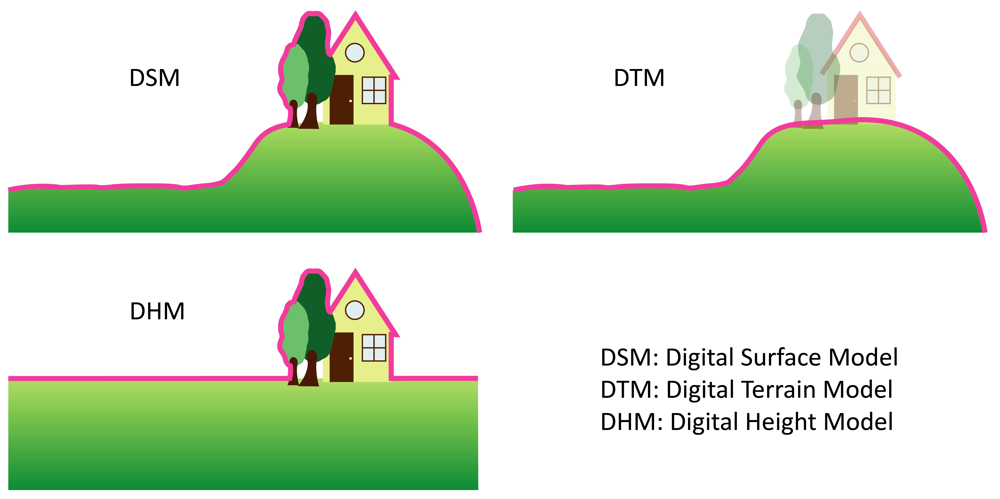
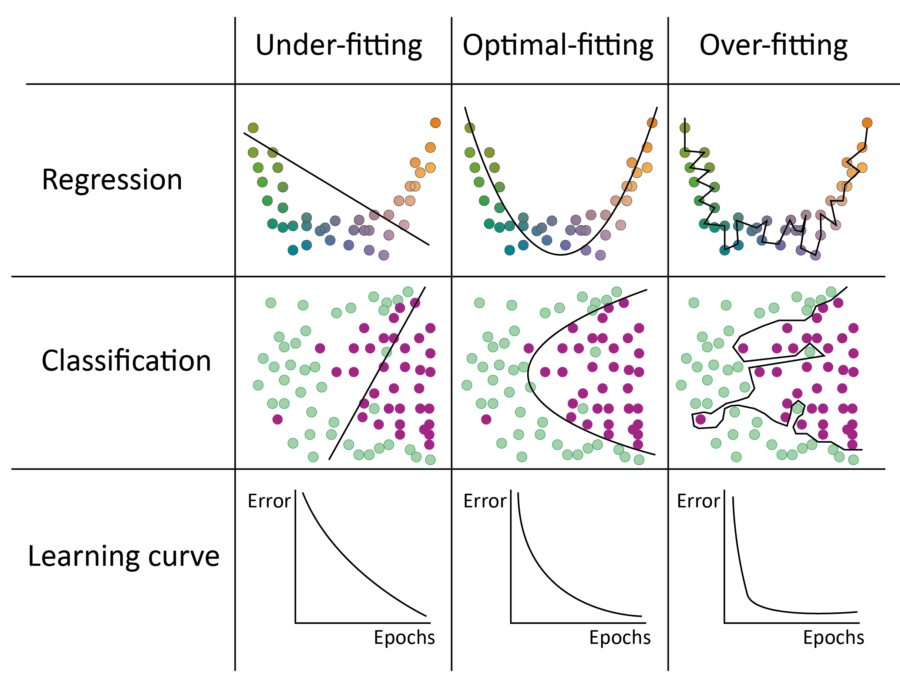

1 Introduction
1.1 Coastal Environment
Marine coastal zones are among the most densely populated regions globally, serving as critical hubs for economic activity, transportation, and tourism. These areas support diverse ecosystems and provide essential resources. They also play a pivotal role in global trade and commerce while offering cultural and recreational value. However, their popularity and utility make them highly vulnerable to environmental pressures such as pollution, habitat destruction, and climate change impacts like sea-level rise and coastal erosion (Orth et al., 2006; Valle et al., 2013; Walker and McComb, 1992). Effective management and sustainable practices are crucial to preserving their ecological integrity and ensuring long-term viability.
Marine vegetative habitats in intertidal zones, such as seagrass meadows, microphytobenthos, and macroalgal habitats, face significant hazards from both anthropogenic activities and natural forces. Human-induced threats include coastal development, pollution, overfishing, and habitat modification, which degrade these ecosystems. Seagrass meadows are threatened by various anthropogenic activities (McKenzie et al., 2020), microphytobenthos are affected by the global decline of intertidal mudflats (Murray et al., 2019), and areas colonized by macroalgae may shrink due to the expansion of wild oyster reefs (Le Bris et al., 2016). Additionally, natural factors such as storms, sea-level rise, climatic extreme events and climate change exacerbate these pressures, altering the structure, function, and resilience of vegetated intertidal habitats.
These habitats provide vital ecological functions, including coastal erosion protection through root stabilization and sediment trapping (Bos et al., 2007) , mitigation of eutrophication effects by absorbing excess nutrients and improving water quality (refs), atmospheric CO2 fixation, contributing to carbon sequestration and combating climate change (Krause-Jensen et al., 2018; McRoy and McMillan, 1977; Saderne et al., 2019). They are also biodiversity hotspots that support unique flora and fauna, providing feeding, breeding, and nursery grounds for various species (Sanabria-Fernández et al., 2024; Unsworth et al., 2019b). Despite their ecological significance and the ecosystem services they provide, intertidal habitats, particularly mudflats, remain highly vulnerable yet often overlooked. Tidal flats are challenging to access, and traditional field sampling methods are too time- and labor-intensive for repeated observations over large areas. Moreover, large variations across different temporal scales in these habitats require frequent monitoring, which is impractical through field surveys alone. This underscores the need for advanced monitoring technologies, effective management practices and targeted conservation strategies to ensure their sustainability and resilience against diverse and evolving pressures.
1.1.1 Ecological and Socio-Economic Importance of Coastal Environments
Coastal environments represent a complex and dynamic interface between terrestrial and marine ecosystems, characterized by exceptional biodiversity, diverse geomorphological structures, and significant socio-economic relevance. These regions span a continuum that includes saltmarshes, beaches, dunes, estuaries, deltas, tidal flats, wetlands, rocky shores, biogenic reefs and lagoons, each shaped by a combination of natural processes and anthropogenic influences (Laignel et al., 2023).
The coastal zone encompasses areas where terrestrial and marine domains intersect, including environments influenced by tidal flows, wave dynamics, and riverine inputs. This transition zone can extend from a few hundred meters inland to several kilometers offshore, depending on local topography and ecological gradients. It incorporates upper shores and dunes, intertidal zones that are periodically submerged and exposed to tidal activity, and subtidal zones that remain submerged permanently (Figure fig-CoastalHabitat ; Laignel et al. (2023)).
As one of the most dynamic and multifaceted regions on Earth, coastal environments host highly diverse and productive habitats. These include both natural ecosystems and managed systems that underpin key economic sectors and urban centers (Hobohm et al., 2021). The functionality of many coastal ecosystems is intrinsically linked to land-sea interactions, as observed in deltas and estuaries (Elliott and Whitfield, 2011). These environments exhibit steep gradients in salinity—from freshwater to hypersaline—and energy levels, ranging from low-energy wetlands to high-energy, wave-dominated shorelines. On a broader scale, coastal regions encompass a spectrum of climatic zones, from tropical to polar, each characterized by unique biogeophysical processes and features (Murray et al., 2019). However, these areas are also exposed to a variety of land-based and marine hazards, including storms, tropical cyclones, storm surges, tsunamis, riverine flooding, shoreline erosion, sea-level rise and biohazards such as algal blooms and pollutants (Mukhopadhyay et al., 2012).
Coastal ecosystems provide a range of ecosystem services that are fundamental to environmental sustainability and human well-being (Barbier et al., 2011). These ecosystems function as natural barriers against storm surges and coastal flooding (Barbier, 2015), thereby mitigating the impacts of such hazards on inland regions and safeguarding human lives and infrastructure (Cooley et al., 2023). They support significant biodiversity, serving as critical habitats and breeding grounds for numerous species, including commercially valuable fish, shellfish, and other marine organisms that sustain global fisheries (Rodrigues-Filho et al., 2023). Coastal vegetation, including mangroves (Alongi, 2012), salt marshes (Connor et al., 2001), and seagrasses (Fourqurean et al., 2012), plays a crucial role in carbon sequestration by capturing and storing atmospheric carbon dioxide, thus contributing to climate change mitigation.
Beyond their role in climate regulation, well-functioning coastal ecosystems enhance water quality by filtering pollutants, sediments, and excess nutrients, thereby maintaining healthier marine and estuarine systems (Los Santos et al., 2020). These ecosystems are integral to nutrient cycling, ensuring the continued productivity of adjacent marine environments (Nixon, 1981). Additionally, they provide substantial cultural, educational, and recreational opportunities, drawing global attention and fostering an intrinsic human connection to nature (Cao et al., 2022; Lakshmi, 2021). This societal value contributes directly to local and regional economies through industries such as tourism, artisanal fishing, and related enterprises (Martı́nez et al., 2007; Otrachshenko and Bosello, 2017). Furthermore, coastal ecosystems supply essential natural resources, including seafood and plant-based materials, while supporting sustainable aquaculture practices that promote global food security and bolster local livelihoods (Farmery et al., 2022). Collectively, these functions highlight the indispensable ecological and economic importance of coastal ecosystems.
1.1.2 Human Activities in Coastal Areas and their Environmental Impacts
Coastal areas are among the most significant regions for human habitation due to their strategic geographic position, resource availability, and economic opportunities. Approximately 2 billion people reside within 50 km of coastlines, with nearly 1 billion living within 10 km (Figure fig-CoastalPop ; Cosby et al. (2024)).

This represents nearly 15% of the global population occupying only 4% of the Earth’s inhabitable landmass. Projections indicate that coastal populations will continue to rise, potentially reaching 2.9 billion by 2100 under various socioeconomic scenarios (Reimann et al., 2023). These areas offer critical resources such as seafood and freshwater, while their moderate climates often support agricultural activities and other forms of sustainable land use. Proximity to oceans and rivers enables robust trade, transportation, and industrial growth, positioning many coastal cities as pivotal economic hubs on a global scale. The ecological and cultural roles of coastal landscapes further contribute to their appeal, attracting populations for both settlement and economic activities.
Human utilization of coastal areas spans a range of economic and social activities that highlight both the benefits and challenges of these environments. Coastal tourism is a significant driver of economic growth, particularly in regions like the European Union (EU). In 2021, the EU’s coastal tourism sector generated approximately €49.9 billion in Gross Value Added (GVA) and employed around 1.9 million people (Eurostat, 2023). Coastal fishing and aquaculture are vital components of the global economy, providing employment to millions and contributing significantly to food security. In 2022, the combined global production of fisheries and aquaculture reached a record 223.2 million tons, with aquaculture alone producing an unprecedented 130.9 million tons. Notably, for the first time, aquaculture surpassed wild capture in aquatic animal production, accounting for 51% of the total (Reuters, 2024). Additionally, maritime shipping is the backbone of international trade, with approximately 80% of global trade by volume and over 70% by value transported via sea routes. This extensive reliance on maritime transport underscores the critical importance of coastal infrastructure, including ports and harbours, in facilitating the movement of goods worldwide (Union, 2025). However, the intensive exploitation of coastal environments for human activities has led to significant ecological challenges.
For instance, marine shipping contributes about 3% of global greenhouse gas emissions, projected to rise by up to 50% by mid-century if stringent measures are not implemented (Faber et al., 2021). Additionally, shipping activities lead to marine pollution, including oil spills, ballast water discharge, underwater noise and light affecting marine life. Oil spills remain a critical environmental concern due to their devastating and long-lasting impacts on marine ecosystems. These spills contaminate water, harm marine biodiversity, and disrupt food chains, often leading to severe economic losses in fisheries and tourism. In 2023, ten oil spills were recorded globally, releasing over 2,000 tons of oil into the environment, including one major spill exceeding 700 tons in Asia (ITOPF, 2023). While historical trends show a reduction in large spills, from over 20 per year in the 1970s to about 1.3 per year in recent decades, incidents such as the spill that occurred in December 2024 in the Kerch Strait, where 3,700 tons of oil were released, underscore the persistent and significant risks. When writing this thesis, it has been 25 years since the Erika catastrophe. On December 12, 1999, the oil tanker Erika, en route from Dunkirk to Livorno with approximately 31,000 tonnes of heavy fuel oil, encountered severe weather in the Bay of Biscay. The vessel broke in two and sank about 60 miles off the coast of Brittany, France, resulting in the spill of approximately 19,800 tonnes of oil into the sea. The spill polluted nearly 400 kilometers of French coastline, causing extensive environmental damage. The oil contamination had severely impacted marine life, including seabirds and coastal ecosystems (Barillé-Boyer et al., 2004). In response to the disaster, the European Union implemented the Erika I, II, and III legislative packages to enhance maritime safety and prevent future incidents. In 2008, French courts held several parties accountable for the spill, including the oil company Total, the shipowner, and the classification society, imposing fines and damages totaling €192 million. This tragic event remains a turning point in European maritime environmental protection policies.
Such events highlight the necessity for stringent preventive measures and rapid response mechanisms to mitigate the ongoing threat from oil spills to marine environments. Ballast water discharge represents a significant vector for the introduction of invasive aquatic species into new environments. Approximately 40% of introductions of non-indigenous aquatic species have been linked to ballast water release. Underwater noise pollution from shipping activities poses a growing threat to marine life, particularly cetaceans such as whales and dolphins (Reeves et al., 2014). Elevated noise levels can disrupt communication, navigation, and feeding behaviors, leading to increased stress and altered migration patterns (Nowacek et al., 2007). Chronic exposure to underwater noise can also result in physical harm and population-level impacts (Guan and Brookens, 2023). One significant impact of fishing and aquaculture on coastal habitats is the degradation of critical ecosystems such as seagrass beds, coral reefs, and mangroves. Destructive fishing practices, including bottom trawling and the use of dynamite or cyanide, physically damage the seafloor and associated habitats, resulting in biodiversity loss and the disruption of ecological functions (Desai and Shambaugh, 2021; Ranjan et al., 2023). The expansion of aquaculture operations often involves converting coastal wetlands, into fish or shrimp ponds, or constructing structures over mudflats (Ahmed and Glaser, 2016). These activities usually conflict with ecosystem conservation, as both uses compete for limited space. The change of land-use into aquaculture facilities reduces the availability of essential nursery habitats for marine species and diminishes the ecosystem services provided by these natural habitats, such as carbon sequestration, shoreline stabilization, and water filtration (Hagger et al., 2022). Additionally, aquaculture activities contribute to nutrient enrichment and pollution in adjacent waters through the release of uneaten feed, faeces, and chemical additives, exacerbating eutrophication and altering benthic community structures (Karakassis et al., 2005). Another significant concern is the introduction of alien invasive species into the environment through aquaculture, which can disrupt local ecosystems and biodiversity (Wolff and Reise, 2002). This issue was explored in Chapter 4. Coastal tourism exerts a profound influence on ecosystem integrity, often driving substantial environmental degradation through mechanisms such as habitat destruction, pollution, and resource overexploitation. The construction and expansion of tourist infrastructure frequently lead to the removal or fragmentation of critical habitats, including mangroves, seagrass meadows, and coral reefs, all of which play pivotal roles in maintaining biodiversity and safeguarding coastal resilience. Furthermore, the rapid influx of visitors generates significant volumes of waste and untreated sewage, contributing to water quality deterioration and eutrophication, which disrupt aquatic ecosystems and alter trophic dynamics. The elevated demand for limited resources, notably freshwater and seafood, exacerbates ecological stress, leading to overharvesting and resource depletion.
The dynamic interactions between terrestrial and marine systems are particularly evident in intertidal habitats, which exemplify the transitional nature of coastal zones. The next section will focus on these habitats, exploring their ecological significance, the processes shaping them, and the challenges they face under increasing environmental and anthropogenic pressures.
1.1.3 Tidal flats
The intertidal zone refers to the coastal area between the high and low tide marks, characterized by periodic exposure and submersion due to tidal cycles. This dynamic zone forms the interface between terrestrial and marine ecosystems and is influenced by complex physical, chemical, and biological processes.
Tidal flats, a specific type of intertidal habitat, are defined as expanses of sand, rock, or mud that experience regular tidal inundation. These ecosystems are shaped by sediment deposition driven by tidal currents, wave action, and terrestrial runoff. As transitional ecosystems between terrestrial and marine environments, tidal flats face pressures from both domains. Additionally, they encounter unique threats, including coastal development (Arkema et al., 2013; Hassan et al., 2005), rising sea levels (Lovelock et al., 2017; Passeri et al., 2015), coastal erosion (Nicholls et al., 2007), decreased sediment input from rivers (Blum and Roberts, 2009), and the subsidence and compaction of coastal sediments (Minderhoud et al., 2020).
Globally, tidal flats are experiencing significant declines in extent due to both natural and anthropogenic factors. Murray et al. (2019), using a satellite time series, have shown that tidal flats have declined by approximately 16% from 1984 to 2016, representing a net loss of over 20,000 km² (Figure fig-TidalFlats).
Regions such as East Asia, the Middle East, and North America have shown the greatest losses. These declines mirror trends observed in other coastal ecosystems, such as mangroves and seagrasses. Despite these losses, some areas have exhibited resilience or even expansion, highlighting the dynamic interplay between sedimentary processes, sea-level rise, and human interventions (Murray et al., 2019).
A potential solution to limit the disappearance of tidal flats is to protect the vegetated ecosystems they host. These ecosystems contribute significantly to nutrient cycling and sediment stabilization, enhancing the overall resilience of tidal flats. By maintaining these biotic communities, the ecological functions of tidal flats can be preserved, buffering them against threats such as erosion and rising sea levels.
The main vegetation classes found on tidal flats will be introduced in the following sections (Figure fig-Vegetations_intro), as Chapters 2 and 3 rely specifically on distinguishing between these classes. Here, “classes” is considered in its taxonomic sense, referring to a taxonomic rank that groups related orders of organisms sharing a common ancestor.

1.1.3.1 Bacillariophyceae, Euglenida and Cyanophyceae
Within estuarine biological communities, microphytobenthos (MPB) can contribute up to 50% of total primary production (N-Uptake, 1999). This assemblage comprises unicellular algae—particularly epipsammic diatoms (associated with sand grains) and epipelic diatoms (free and motile within muddy sediments, Figure fig-Vegetations_intro B)—as well as cyanobacteria and euglenids (MacIntyre et al., 1996). These organisms proliferate on sediment surfaces during low tide (Kelly et al., 2001), colonizing intertidal superficial sediments and forming biofilms that can extend over several square kilometers (Benyoucef et al., 2014).
The MPB fulfils both structural and trophic functions within intertidal mudflats. Structurally, microphytobenthic biofilms protect sediment from resuspension and enhance mudflat stability by mitigating erosive processes (Decho, 2000). They also serve as a food resource for deposit-feeding and suspension-feeding invertebrates (Miller et al., 1996). MPB forms the foundation of various food chains, being consumed at low tide by organisms ranging from gastropods (Savelli et al., 2018) to shorebirds (Drouet et al., 2015). Additionally, at high tide, tidal currents and waves can resuspend the MPB, making it available in the water column for suspension feeders and facilitating the export of a portion of its biomass to adjacent ecosystems (De Jorge and Van Beusekom, 1995; Decottignies et al., 2007).
The MPB’s role in sediment stabilization is further supported by its production of extracellular polymeric substances (EPS), which enhance sediment cohesion and reduce erosion. Moreover, it contributes to nutrient cycling within coastal ecosystems, influencing the availability of nutrients such as nitrogen and phosphorus, which are essential for primary production. The dynamic nature of MPB communities allows them to adapt to varying environmental conditions, making them integral to the resilience and functioning of coastal habitats.
1.1.3.2 Chlorophyceae
Green macroalgae, belonging to the Class of Chlorophyceae, are a diverse group of multicellular photosynthetic organisms predominantly inhabiting marine environments, though some species are found in freshwater and terrestrial habitats (Figure fig-Vegetations_intro E). They are characterized by green pigmentation, resulting from the dominance of chlorophylls a and b, which play a crucial role in their photosynthetic processes (Cikoš et al., 2022).
Ecologically, green macroalgae are significant primary producers of coastal ecosystems. Species such as those in the genus Ulva are known for their rapid growth rates and are often indicators of nutrient-rich conditions (Liu et al., 2020).
In addition to their ecological roles, green macroalgae have been utilized in various human applications. They are cultivated for food used in aquaculture and their potential in biofuel production and as bioindicators for monitoring environmental health is being actively researched (Moreira et al., 2022).
However, under eutrophication conditions —excessive nutrient enrichment—green macroalgae can proliferate excessively, leading to algal blooms. These blooms can have detrimental effects on marine ecosystems, including hypoxia (low oxygen levels) and competition with other important species (Schreyers et al., 2021; Sun et al., 2022).
1.1.3.3 Phaeophyceae
Brown macroalgae, classified under the class Phaeophyceae, are a diverse group of multicellular marine algae predominantly found in temperate and polar coastal regions (Figure fig-Vegetations_intro C). Their characteristic brown coloration arises from the presence of the pigment fucoxanthin, which masks the green color of chlorophylls a and c. This pigmentation is integral to their photosynthetic efficiency, particularly in low-light underwater environments (Cikoš et al., 2022).
Ecologically, brown macroalgae play a pivotal role in marine ecosystems. They form extensive underwater forests, commonly known as kelp forests, which provide habitat, food, and shelter for a multitude of marine organisms, thereby enhancing local biodiversity. These structures influence coastal oceanography by affecting water flow and light penetration. In intertidal areas, they often colonize rocky substrates, creating suitable habitat for various species like sea anemone, limpet and fishes (Eger et al., 2023).
In terms of human utilization, brown macroalgae have been harvested for centuries for various purposes. They are a source of alginates—polysaccharides extracted from their cell walls—widely used as gelling, thickening, and stabilizing agents in the food, pharmaceutical, and cosmetic industries, and they also have the potential to be uses in Lithium-ion batteries production (Kovalenko et al., 2011). Additionally, certain species are consumed directly as food, particularly in East Asian cuisines, and are recognized for their nutritional value and health benefits.
Brown macroalgae also contribute to environmental management practices. Their ability to absorb and accumulate heavy metals makes them effective in bioremediation efforts to remove pollutants from marine environments (Davis et al., 2003). Furthermore, their potential in carbon sequestration positions them as valuable components in strategies aimed at mitigating climate change impacts.
However, brown macroalgae are susceptible to environmental changes. Factors such as ocean warming, pollution, and overfishing can lead to declines in their populations, which in turn affects the broader marine ecosystems they support (Manca et al., 2024). Conservation and sustainable management of these algae are therefore crucial to maintaining the health and productivity of coastal marine environments.
1.1.3.4 Rhodophyceae
Red macroalgae, or Rhodophyta, constitute a diverse group of predominantly marine, multicellular algae characterized by their reddish pigmentation, which results from the presence of phycoerythrin and phycocyanin pigments (Figure fig-Vegetations_intro D). These pigments enable red algae to efficiently absorb blue and green wavelengths of light, facilitating photosynthesis at greater ocean depths compared to other algal groups (Cikoš et al., 2022).
Ecologically, red macroalgae play a vital role in marine environments. They contribute significantly to primary production and serve as foundational species in various marine habitats. Notably, coralline red algae, which secrete calcium carbonate, are instrumental in building and stabilizing coral reef structures, providing habitat complexity that supports diverse marine life (Cornwall et al., 2023).
In terms of human utilization, red macroalgae have been harvested for centuries for their nutritional and industrial value. Species such as Porphyra (known as nori in Japan and gim in Korea) and Palmaria palmata (dulse) are consumed as food, valued for their high protein content, essential vitamins, and minerals (Stévant et al., 2023; Wei et al., 2023). Additionally, red algae, such as Kappaphycus alvarezi or Eucheuma spp., are a primary source of phycocolloids like agar and carrageenan, which are extensively used as gelling and stabilizing agents in the food, pharmaceutical, and cosmetic industries (Nurdin et al., 2023; Valderrama et al., 2013). Red macroalgae also possess bioactive compounds with potential therapeutic applications. Research has identified various secondary metabolites in red algae that exhibit antimicrobial, anti-inflammatory, and anticancer properties, highlighting their potential in drug development and functional food ingredients (Ismail et al., 2020).
However, red macroalgae face challenges due to environmental changes. Factors such as climate change, pollution, and habitat destruction can adversely affect their populations and the ecosystems they support. Conservation efforts and sustainable harvesting practices are essential to preserve these ecologically and economically important organisms (Hanley et al., 2024).
1.1.3.5 Magnoliopsida
Intertidal seagrass meadows (Figure fig-Vegetations_intro A), classified under the class Magnoliopsida, consist of flowering plants adapted to the unique challenges of periodic exposure and submersion in the intertidal zone. These meadows stabilize sediments via their root systems, which anchor substrates and mitigate erosion, thereby reducing sediment loss and maintaining substrate integrity (Davies et al., 2024; Sousa et al., 2019; Zoffoli et al., 2023). Additionally, seagrass meadows provide essential ecosystem services, including acting as habitat, nurseries or feeding location for numerous species (Figure fig-SeagrassHabitat), many of which are commercially important (Moussa et al., 2020). Their structural complexity offers refuge from predators, supporting juvenile survival and biodiversity. These meadows play a significant role in global carbon sequestration, capturing and storing carbon at rates comparable to, or exceeding, terrestrial forests. Furthermore, they regulate nutrient cycles and improve water quality by trapping sediments and filtering pollutants, thus sustaining the health of adjacent marine environments (Los Santos et al., 2019). By cycling nutrients and contributing organic matter through detritus production, intertidal seagrass meadows enhance tidal flats’ ecological productivity and resilience, underscoring their critical role in supporting both ecological functions and socio-economic benefits. Seagrass meadows, like tidal flats, are undergoing significant dglobal decline due to various anthropogenic and natural stressors (Davies et al., 2024). Despite their critical ecological roles, seagrass ecosystems remain comparatively underrepresented in scientific research within the broader scope of coastal ecosystems. As illustrated in Figure fig-SeagrassHabitat (E), the proportion of publications focusing on seagrasses in the context of coastal ecosystem studies is considerably lower than those dedicated to other key habitats such as coral reefs, mangroves. This disparity highlights a critical research gap, underscoring the need for increased scientific attention to better understand and mitigate the factors contributing to the degradation of these vital ecosystems.
Traditional field-based sampling methods have proven to be highly effective for studying coastal environments at localized or small spatial scales, providing detailed insights into species composition, habitat structure, and ecological interactions. However, these approaches face significant limitations when applied to broader spatial extents or temporal scales due to their labor-intensive nature and logistical constraints. This methodological gap poses challenges for evaluating large-scale patterns and long-term changes in coastal ecosystems, such as seagrass meadows, mangroves, and tidal flats. Remote sensing technologies, with their ability to capture high-resolution data across extensive geographic areas and over multiple time periods, offer a powerful complementary tool to address these limitations. Integrating traditional methods with remote sensing approaches allows a more comprehensive understanding of coastal ecosystem dynamics, facilitating the assessment of both localized impacts and global trends. The following section explores how advancements in remote sensing technologies are transforming the study of coastal environments, enabling more efficient and scalable assessments.

1.2 Concepts of Remote sensing
Coastal environments represent highly dynamic and sensitive ecosystems shaped by complex interactions between natural processes and human activities. Remote sensing (RS) technologies are crucial for monitoring these regions, providing detailed data on shoreline erosion, habitat degradation, sediment dynamics, and water quality. This section reviews fundamental concepts and methodologies of RS applied to coastal environments.
RS defines the ability to retrieve information in a non-invasive way, without direct contact with the target. It relies on the propagation of signals, typically optical, acoustic, or microwave, between the target and the sensor. RS provides the basis for Earth observation (EO), where its methodologies facilitate large-scale and long-term data collection. Instruments on satellites, aircraft, and drones provide high-resolution imagery and measurements critical for monitoring environmental changes, mapping natural resources, and assessing land use patterns. These technologies enable systematic data collection over large areas and extended periods, supporting analyses such as deforestation, glacial melting, variations in ocean temperature, and changes in land use.
Some technical characteristics of remote sensing sensors can directly impact their ability to map coastal ecosystems. The next section explores these characteristics, illustrating their importance with specific use case examples.
1.2.1 Active Remote Sensing, Example of LiDAR
Active RS is a technique in which a sensor emits its own energy—typically in the form of electromagnetic radiation—toward a target and measures the energy reflected or backscattered from it. This method allows for the collection of data regardless of natural light conditions, enabling observations during both day and night and through various weather conditions.
The Light Detection and Ranging (LiDAR) sensor emit laser beams in the ultraviolet (UV), visible or infrared (IR) regions of the electromagnetic spectrum. By analyzing the return signal, they can estimate distances to objects or surfaces, detect optically active constituents in water bodies, and assess aerosols in the atmosphere (Dionisi et al., 2024; Jamet et al., 2019)
LiDAR works by emitting a beam of light and measuring the time it takes for the beam to return to the sensor. This process not only calculates distances but also captures the intensity of the returned signal. In many instances, multiple returns from a single pulse are measured, enabling the mapping of varying objects height within the same x and y coordinates. This capability allows the creation of precise, three-dimensional representations of the environment such as mapping the heights of trees in forests or measuring crop heights in agricultural fields (Figure fig-LIDAR). When ground height cannot be directly measured, LiDAR data can generate a digital surface model (DSM), which represents the uppermost layer of the environment. However, if multiple returns are recorded, it becomes possible to create both a DSM and a digital terrain model (DTM), which represents the ground surface, by differentiating between the surface and underlying layers. The difference between DSM and DTM, called Digital Height Model (DHM), can be used to assess living stock or biomass.
Achieving accurate 3D measurements of a target using LiDAR technology requires a high level of precision in assessing each system parameter. The quality of the final output depends on careful calibration and execution at every stage of the process. One critical step is ensuring the precise timing of the laser beam’s return after it reflects off the target. This timing directly determines the distance calculations that form the basis of the 3D structure. Equally important is the accurate positioning of the LiDAR sensor, which is often mounted on a drone, aircraft, or satellite. The sensor’s x, y, and z coordinates must be continuously tracked with high precision. Real-Time Kinematic (RTK) positioning systems are commonly employed to achieve this. These systems enhance the accuracy of the positioning data by providing real-time corrections to the sensor’s GPS coordinates, ensuring minimal error and maintaining the integrity of the spatial measurements. Without such stringent measures, the resulting LiDAR data is prone to errors that can lead to distorted and noisy representations of the mapped surface. These inaccuracies diminish the data’s reliability and compromise its utility for detailed analysis and decision-making processes.
In coastal environment monitoring, LiDAR systems are classified based on their emitted wavelengths, which determine their performance and application. These systems are categorized into “topographic LiDAR” and “bathymetric LiDAR,” each suited to specific tasks in coastal studies. Topographic LiDAR operates in the near-infrared (NIR) spectrum (approximately 1000 nm) and maps terrestrial features, such as beach contours, vegetation density, rocky shore structures and man-made installations. Its ability to generate high-density point clouds stems from efficient operation at lower power. Unlike other types of LiDAR, NIR LiDAR requires less power, making it generally more affordable and compact. These attributes allow topographic LiDAR systems to be easily mounted on drone platforms, offering greater flexibility and accessibility for coastal monitoring. In contrast, bathymetric LiDAR, utilizing green (~532 nm) and red wavelengths, penetrates the water column to reveal submerged landscapes, including coral reefs, seagrass meadows, and shallow seabeds. Operating within the visible region of the electromagnetic spectrum, it is more susceptible to atmospheric scattering than NIR LiDAR, making it less suitable for terrestrial applications.
The Litto3D® product (SHOM, n.d.) consists of high-resolution bathymetric and topographic maps in coastal areas created using LiDAR technologies. During airborne missions, the system captures terrestrial and submerged terrain features with high precision. The topographic LiDAR achieves a spatial resolution of 1 m, with vertical accuracy up to 20 cm under optimal conditions, such as minimal atmospheric interference, stable flight paths, and favorable weather. The bathymetric LiDAR maps underwater landscapes to depths of approximately 70 m, depending on water transparency. This dual-mode capability is essential for modeling complex coastal environments, seamlessly integrating terrestrial and marine datasets. The airborne platform enables rapid data acquisition over large areas, overcoming challenges associated with ground-based or shipborne methods. The fusion methodology used by Litto3D® ensures the precise alignment of terrestrial and marine datasets, resolving inconsistencies in elevation data at land-water interfaces. The resulting unified dataset accurately represents coastal environments and supports diverse scientific and practical applications such as coastal risk assessment and ecological studies. Distributed by the Service Hydrographique et Océanographique de la Marine (SHOM, 2024) and the Institut National de l’Information Géographique et Forestiere (IGN, 2024), this dataset is open-source but currently available only for selected coastal regions in France.
In this study, LiDAR data were utilized in Chapter 4 using a drone-borne NIR LiDAR system. These data were employed to evaluate the elevation and slope of mudflats in French and Spanish estuaries and to map the spatial distribution of the invasive red macroalga Gracilaria vermiculophylla. In Chapter 5, the Litto3D product was and a water height dataset were used to assess the emersion time of seagrass meadows in Quiberon, France, during low tide. Since this thesis focuses on intertidal environment, field campaigns were conducted during low tide to ensure optimal conditions for the effective use of NIR LiDAR providing unobstructed access to exposed intertidal zones.
1.2.2 Passive Remote Sensing
Passive RS collects data about the Earth’s surface or atmosphere by measuring naturally emitted or sunlight-reflected electromagnetic radiation (EMR) without actively transmitting signals. This technique relies on energy sources external to the instrument, such as sunlight for optical and NIR sensors or Earth’s thermal emissions for thermal infrared sensors.
Passive RS is widely utilized in spaceborne satellite missions and has played a pivotal role in programs developed by major space agencies, including the European Space Agency (ESA) and the National Aeronautics and Space Administration (NASA). For instance, Sentinel-2 which provides ESA’s highest spatial resolution imagery, employs passive sensors. Data measured by these sensors have been applied to monitor land cover, vegetation dynamics and coastal and in land-water environments.
As sunlight enters the Earth’s atmosphere, it interacts with various gases and particles altering its properties. These interactions include scattering, absorption, and refraction. Scattering occurs when atmospheric molecules and aerosols disperse light in different directions, with shorter wavelengths like blue light being more strongly affected. Absorption results from atmospheric constituents such as ozone, water vapor, and carbon dioxide, which absorb energy at specific wavelengths, reducing the intensity of the transmitted light that reaches the Earth’s surface. Refraction occurs as light changes direction and speed while passing through atmosphere layers with varying densities (Figure fig-FigLightPath).
When sunlight reaches the Earth’s surface, it exhibits several behaviors, depending on the surface properties and the angle of incidence. These behaviors include:
Absorption: The surface absorbs light, converting it into heat or another form of energy. This process varies based on the biogeochemical characteristics of the surface, with darker surfaces typically absorbing more light.
Transmission: The light passes through the surface, entering a different medium, such as water or transparent materials. The extent of transmission depends on the material’s transparency and refractive index.
Reflection: Light that is neither absorbed nor transmitted is redirected back in the opposite direction. The amount of reflection depends on the surface’s albedo, with bright surfaces like snow reflecting more light compared to darker surfaces such as forests.
Only reflected light can be detected by spaceborne sensors. The most used metric in passive RS, to quantify EMR, is reflectance (\(R\)). \(R\) is typically measured as the ratio of upwelling radiance \(L_u\) to downwelling radiance \(L_d\) (Equation eq-reflectance). \(L\) is defined as the radiant intensity per unit of projected area in a specified direction and is expressed in units of W.m-2.sr-1. \(R\), however, is dimensionless.
\[ R(\lambda) = \frac{L_u(\lambda)}{L_d(\lambda)} \tag{1.1}\]
\(R\) is defined for each wavelength as a value between 0 and 1. A value of 0 indicates that all light has been absorbed or transmitted by the target, while a value of 1 indicates that all light has been reflected (Figure fig-FigLightPath).

\(R\) at the Top of Atmosphere (TOA), i.e., the magnitude directly measured by spaceborne or airborne sensors contains signals originating from both the atmosphere and the Earth’s surface. Therefore, to study targets located on the Earth’s surface, \(R_{TOA}\) must undergo atmospheric correction processing to transform it into Bottom of Atmosphere (BOA) \(R\), which represents the intrinsic reflectance properties of the surface target. Precise \(R_{BOA}\) is crucial for accurately analyzing surface characteristics and for applications like vegetation monitoring, water quality assessment, and land cover classification.
One of the most basic atmospheric correction methods is the “black pixel” method, which assumes that all the signal retrieved over optically deep waters originates entirely from the atmosphere. This information is then used to correct the reflectance across the entire scene. However, this method requires the presence of optically deep water targets within the scene and assumes uniform aerosol concentrations across the scene. Such assumption may be inaccurate, particularly for satellites with a wide field of view, such as MODIS, where a single image can cover a swath of 2,330 km. Limitations to this technique also arise when the target of study is a water body itself. These limitations highlight the need for more advanced correction techniques that account for spatial variability in atmospheric properties.
To address these challenges, sophisticated atmospheric correction algorithms tailored to specific sensors and study areas have been developed. These algorithms account for atmospheric scattering, absorption, and path radiance contributions by leveraging radiative transfer models, auxiliary atmospheric data, and sometimes in situ measurements. For example, data from the ESA constellation Sentinel-2 can be processed using Sen2Cor, a correction algorithm designed to produce \(R_{BOA}\) by incorporating atmospheric parameters such as water vapor, aerosols, and ozone concentrations. Additionally, some atmospheric correction methods are customized for specific targets, for example, algorithms specifically designed for water bodies, such as POLYMER (Steinmetz et al., 2011) or ACOLITE (Vanhellemont and Ruddick, 2018).
\(R_{BOA}\) provides information regarding light reflected by the target across various wavelengths. This phenomenon, referred to as the spectral signature, is a unique feature of each target type. Spectral signatures contain data about the physical and chemical properties of surfaces, forming the basis for RS applications. By analyzing spectral signatures, it is possible to identify and classify surface types, as well as derive insights into environmental changes and land-use dynamics. For example, Chlorophyll-a (Chla), a pigment found in all vegetation cells, plays a key role in defining the spectral signature of plant life. Chla absorbs light in specific regions of the electromagnetic spectrum, particularly in the blue region around 440 nm and the red region near 675 nm. Consequently, healthy vegetation exhibits a spectral signature with low \(R\) at 440 and 675 nm. Variations in physiological states and vegetation types result in different spectral patterns, enabling their differentiation and monitoring of ecological conditions over time (Figure fig-Spectral_signature).
Spectral indices are mathematical combinations of reflectance values at specific wavelengths, designed to maximize particular surface characteristics with simple processing. Vegetation indices, for example, leverage the distinct reflectance patterns of photosynthetic pigments. The Normalized Difference Vegetation Index (NDVI) is a widely used index based on the normalized difference between \(R\) in the NIR and red. It is calculated as:
\[ NDVI = \frac{R(NIR)-R(Red)}{R(NIR)+R(Red)} \tag{1.2}\]
where \(R(NIR)\) is the reflectance in the NIR region around 800 nm and \(R(Red)\) is the reflectance in the red region arround 665 nm.
NDVI values range from -1 to 1, with negative values indicating water and higher positive values corresponding to dense healthy vegetation. While NDVI is a proxy for vegetation biomass and photosynthetic activity, its interpretation can be complex in heterogeneous environments, such as areas with overlapping vegetation types or substrates. Some studies propose a simple classification of NDVI based on thresholds to differentiate between distinct types of intertidal vegetation (Méléder et al., 2003b). While this simple first approximation can be useful for delimitating contrasting types of targets, establishing thresholds depends on specific sensor characteristics. This technique often fails in mapping vegetation types with similar pigment content or highly heterogeneous targets. More sophisticated techniques that utilize a greater amount of spectral information are required in such situations (Oiry and Barillé, 2021)
\(R_{BOA}\) can be used to identify key absorption features of chemical compounds of the target, by applying derivative analysis to the spectral signature. The second derivative of the \(R\) is utilized to enhance the detection of subtle pigment or mineral absorption features. By analyzing the second derivative, these small features are amplified, allowing for more precise identification of pigment presence and estimation of their concentrations. This approach is particularly effective for identifying accessory pigments with weaker absorption features than Chla (Jesus et al., 2014).
Some technical characteristics of RS sensors can directly impact their ability to map coastal ecosystems. The next section explores these characteristics, illustrating their importance with examples of specific use cases.
1.2.2.1 Spectral and Radiometric resolution
The detection of pigments absorption features necessitates measuring light reflectance at fine spectral resolution. However, measuring detailed spectral signatures depends on the sensor’s characteristics.
Spectral resolution is defined by three main components: the number of spectral bands, the bandwidth (Full Width at Half Maximum, FWHM), and the spectral sampling interval. Sensors with higher spectral resolution can distinguish between closely spaced wavelengths within the electromagnetic spectrum, enabling precise characterization of spectral features (Figure fig-Spectral_resolutions).
RS sensors are generally classified into two categories based on their spectral resolution: multispectral and hyperspectral sensors. Multispectral sensors are characterized by a limited number of broad spectral bands, with a bandwidth generally exceeding 20 nm. The spectral sampling interval is relatively large, resulting in a coarser spectral resolution that provides a broad overview of the spectral characteristics of a scene. In contrast, hyperspectral sensors are equipped with hundreds of narrow, contiguous spectral bands. Small spectral sampling intervals separate these bands, often just a few nanometers, which results in a much finer spectral detail. High spectral resolutions, capturing subtle variations in absorption features and spectral shapes, allow distinguishing between targets with similar spectral characteristics, such as vegetation with similar pigment profile. Multispectral sensors, while less detailed, are efficient for general spectral analyses where fine discrimination is not required. Another specification of sensors in the spectral discrimination is the radiometric resolution. It refers to the precision at which the sensor records the data. It is defined by the number of discrete levels, or bits, used to represent the energy recorded for each pixel in an image. Higher radiometric resolution enables finer distinctions in brightness levels, which is particularly important for detecting subtle differences in reflectance and ensuring accurate analysis of surface features. For example, an 8-bit sensor can record 256 levels of intensity, while a 12-bit sensor can capture 4,096 levels, providing greater detail and dynamic range in the captured imagery (Figure fig-Spectral_resolutions D).
1.2.2.2 Spatial resolution
Spatial resolution, defined as the smallest discernible detail a sensor can detect on Earth’s surface, is another fundamental characteristic of RS sensors. It is typically represented by the ground area covered by a single pixel in an image and is influenced by the sensor’s instantaneous field of view (IFOV), which determines the angle of view and, consequently, the ground area visible to the sensor. A smaller IFOV or lower sensor altitude results in finer spatial resolution, enabling the detection of smaller features. For the same IFOV, sensors mounted on satellites can cover larger areas compared to those on drones, albeit with reduced detail.
Spatial resolution can range widely depending on the research objective and sensor platform. For instance, moderate-resolution sensors like MODIS aboard Terra and Aqua capture data at spatial resolutions of 250 m, 500 m, and 1 km, making them suitable for large-scale environmental monitoring. In contrast, Sentinel-2 provides higher spatial resolutions—10 m for visible and NIR bands, 20 m for red-edge and shortwave infrared bands, and 60 m for atmospheric correction bands—facilitating detailed observations for applications such as vegetation and land-use mapping. At the finer end, high-resolution sensors on platforms like Pleiades-Neo achieve sub-meter resolutions (e.g., 30 cm per pixel), ideal for precise Earth observations.
Unmanned Aerial Vehicles (UAVs), equipped with high-resolution cameras, offer even finer spatial resolutions, often down to a few cm, even mm, depending on flight altitude and sensor specifications. This ultra-high resolution is particularly advantageous for heterogeneous site mapping. Chapter 3 will show that an ultra-high spatial resolution can be valuable for machine learning model training. However, such a high resolution requires increased data storage and processing capacity, illustrating the trade-off between detail and operational feasibility (sec-Drones).
In scenarios involving mixed vegetation types or intricated landscape features, coarse-resolution sensors may fail to capture fine-scale heterogeneity, limiting the accuracy of ecological or land-use analyses. Conversely, high-resolution imagery excels in such contexts but demands significant computational resources. Selecting the appropriate spatial resolution depends on specific research objectives and the spatial scale of the phenomena under investigation, underscoring the necessity of aligning sensor capabilities with study requirements.
1.2.2.3 Temporal Resolutions
Another key characteristic of RS sensors is their temporal resolution, defined as the time interval between successive image acquisitions over the same study site. Temporal resolution is critical for monitoring dynamic environments, such as coastal ecosystems, where conditions can change rapidly due to tides, weather events, or human activity.
The temporal resolution of a satellite sensor may vary from hours to days, depending on whether the platform orbit is geostationary or sun-synchronous. Geostationary satellites provide continuous coverage over a fixed location, while sun-synchronous orbits follow sun illumination, allowing image acquisition at the same time of the day for a location. This consistency is particularly important for visible-infrared sensors, as it ensures usable images and maximizes the temporal resolution of the sensor by avoiding night-time acquisitions. On the other hand, airborne platforms exhibit more variable temporal resolutions, ranging from days to years, depending on mission planning. For example, the Sentinel-2 constellation, composed of two satellites, offers a temporal resolution of 5 days at the equator. This revisit time improves to approximately 3 days at higher latitudes, such as in France, due to the overlap in satellite paths. Such frequent revisits make Sentinel-2 an excellent choice for applications requiring consistent monitoring, such as vegetation health assessments, sediment transport studies, or vegetation phenology estimations. Certain missions, like Sentinel-3, achieve even shorter revisit times. Equipped with sensors designed for ocean and land monitoring, Sentinel-3 provides near-daily coverage, making it particularly suited for applications that require high temporal frequency, such as tracking phytoplankton blooms, which can appear and disappear within a few days, or surface temperature variations. This capability is crucial for capturing fast-evolving phenomena and ensuring timely data delivery for decision-making.
Usually, temporal resolution is highly dependent on the spatial resolution of the sensor. Higher spatial resolution often corresponds to lower temporal resolution, although geostationary platforms and pointable sensors can be exceptions to this trend (Figure fig-ResolutionSatellite).
In contrast, some sensors are operated on-demand, with data acquisition triggered directly by the user. This is characteristic of drones and specialized satellite missions like Pleiades or the italien Precursore IperSpecttrale della Missione Applicativa (PRISMA). While these systems may lack consistent temporal archives for a given study site, they provide unmatched flexibility for high-resolution data collection. Such sensors are invaluable for addressing specific research objectives, including acquiring detailed imagery immediately after extreme weather events or capturing localized features with high spatial precision, complementing routine satellite-based monitoring programs.
1.2.2.4 A story of trade-off
RS involves inherent trade-offs between spatial, temporal and spectral resolutions, and coverage area, which influence the suitability of sensors for different applications (Figure fig-ResolutionSatellite). High spatial resolution sensors, capable of capturing fine-scale details, are essential for precise tasks like urban infrastructure mapping or site-specific ecological studies. In coastal environments, high-resolution sensors are invaluable for identifying small-scale features such as intertidal vegetation patterns, sediment deposition dynamics. However, these sensors typically have lower temporal resolution and smaller coverage areas, limiting their utility for monitoring dynamic or widespread phenomena, such as tracking algal bloom events across entire coastal regions.
In contrast, sensors with coarser spatial resolution offer extensive coverage and higher revisit frequencies, making them ideal for tracking large-scale environmental changes. For coastal areas, these sensors can effectively monitor phenomena such as Sea Surface Temperature (SST) variability, coastal erosion trends, and seasonal changes in primary productivity over larger geographic extents. For example, instruments like MODIS or VIIRS are well-suited for observing ocean color and Chla concentrations, critical for understanding broader ecosystem health in coastal zones.
Intermediate-resolution sensors provide a compromise, offering sufficient spatial detail for regional studies while maintaining adequate temporal resolution for periodic monitoring. These are particularly useful for applications such as mapping coastal vegetation transitions, estuarine dynamics, and changes in sediment plumes from rivers into the ocean over time. Instruments like Sentinel-2 or Landsat provide this balance, making them key assets for monitoring coastal ecosystems at scales relevant to regional management.
The selection of an appropriate sensor depends on the specific requirements of the study, balancing the need for detail, frequency, and geographic extent. Coastal zone management, for instance, often benefits from using a combination of sensors to capture both fine-scale spatial patterns and broader temporal trends, ensuring comprehensive monitoring of these dynamic environments.
While satellite acquisitions are essential for covering large areas, heterogeneous habitats often require finer spatial resolutions, positioning drones as the most suitable observation tool. Drone-based studies can also serve as proof-of-concept techniques to refine and develop methodologies later applicable to satellite data.
Although this work builds upon many of the concepts introduced in the previous sections, one critical RS technique warrants further discussion in this introduction. This technique, characterized by its adaptability and technical precision, provides essential insights and complements the methods already outlined. The next section will introduce drones, focusing on their application as a RS tool and detailing the associated techniques and data analysis methods.
1.2.3 About Drones
1.2.3.1 History
At the beginning of the 20th century, Julius Neubronner, a German apothecary, faced a logistical challenge in his professional practice. Neubronner regularly relied on carrier pigeons to deliver and retrieve small, urgent medical packages, such as medications or prescriptions, between his pharmacy and a sanatorium located several kilometers away. This method, though efficient for short distances, often left Neubronner curious about the exact routes taken by the pigeons and the environmental conditions they encountered during their flights. Motivated by both practical concerns and a spirit of innovation, Neubronner sought a way to monitor and document the journeys of his pigeons. He developed a lightweight, auto-triggering camera that could be strapped to the pigeons’ chests (Figure fig-pigeons Top). The camera was designed to automatically take photographs at regular intervals during the birds’ flights. It had two lenses and a pneumatic system; it was activated by inflating the left chamber. As the air slowly escaped from the capillary at the bottom, the piston moved back triggering the exposure. Neubronner ensured that the camera was light enough not to impede the pigeons’ ability to fly (Simic Milas et al., 2018).
The resulting aerial photographs offered a novel perspective, capturing bird’s-eye views of landscapes, towns, and natural features (Figure fig-pigeons Bottom). These images not only satisfied Neubronner’s initial curiosity about the pigeons’ routes but also demonstrated the broader potential of aerial photography for cartography, reconnaissance, and environmental observation. His innovative work garnered widespread attention, paving the way for further developments in RS and aerial imaging. Neubronner’s experiments illustrated the practical applications of aerial imaging at a time when such perspectives were almost entirely unavailable, highlighting his contributions to science and art.
Julius Neubronner’s early vision exemplifies how innovative thinking can overcome barriers in data collection. For many years, the practical limitations of RS technologies, particularly regarding spatial and temporal resolution or the high costs and delays in data acquisition, constrained their applicability in various fields. However, innovations like drones have significantly addressed these challenges. Much like Neubronner’s pigeons, modern drones are not only accessible and affordable but also offer users the freedom to determine when and where to deploy them, providing unparalleled control over spatial and temporal data collection. Neubronner’s ingenuity in developing lightweight aerial cameras for pigeons paved the way for these advancements, demonstrating the enduring impact of pioneering solutions in expanding the potential applications of RS.
Modern drone history has its roots in military applications, where the need for unmanned surveillance and targeted operations drove the initial technological advancements. Early drone systems, such as the use of radio-controlled aircraft in World War II, laid the foundation for what would become an essential tool in both civilian and military contexts. The transition to civilian applications gained momentum in the late 20th century, particularly with the advent of lightweight materials, improved battery technologies, and advances in GPS and RS capabilities. Today, drones are integral to various industries, from precision agriculture and infrastructure inspection to environmental monitoring and emergency response. This evolution reflects the growing accessibility and versatility of drone technology, making it a transformative element in modern data acquisition and analysis.
1.2.3.2 General presentation
Drones, also known as Unmanned Aerial Vehicles (UAVs), are aircraft systems operated without a human pilot onboard. They are often embedded with GPS and can be remotely controlled or fly autonomously through software-controlled flight plans. These devices have become indispensable tools in modern RS, offering high accuracy, on-demand data acquisition, and access to previously unreachable locations. The growing use of drones in various fields, from environmental monitoring to urban planning, underscores their versatility and importance.
While drones are not inherently functional on their own, they become highly effective tools when integrated with various sensors. These include hyperspectral sensors (Suomalainen et al., 2021), multispectral sensors (Nurdin et al., 2023; Román et al., 2023), RGB cameras (Sweet et al., 2022), thermal cameras (Speth et al., 2022), LiDAR systems (Krček et al., 2020; Lee et al., 2023), as well as gas and chemical sensors.
1.2.3.3 Data acquisition
A key parameter in drone-based image acquisition is the overlap between images (Figure fig-overlaps). This is categorized as front overlap (FO), which refers to the overlap between consecutive images along the same flight path, and side overlap (SO), which pertains to the overlap between images from adjacent flight paths. Ensuring sufficient overlap is essential for accurate reconstruction of orthomosaics through photogrammetric processes. Typically, 80% front overlap and 70% side overlap are considered optimal to achieve reliable results. The mathematical definitions of FO and SO are as follows:
\[ \text{FO} \;=\; \left(1 - \frac{v \times \Delta t} {\frac{H \times h_{\text{sensor}}}{f}}\right)\times 100 \tag{1.3}\]
and
\[ \text{SO} \;=\; \left(1 - \frac{d_{\text{flight_line}}} {\frac{H \times w_{\text{sensor}}}{f}}\right)\times 100 \]
where:
\(H\): Flight altitude above the ground (m) \(f\): Camera focal length (mm) \(h_{\text{sensor}}\): Sensor dimension (height) in the flight direction (mm) \(w_{\text{sensor}}\): Sensor dimension (width) perpendicular to the flight direction (mm) \(v\): Ground speed of the drone (m.s-1) \(\Delta t\): Time interval between consecutive photos (s) \(d_{\text{flightline}}\): Distance between two adjacent flight lines (meters)
These equations show that for a given sensor (e.g., for known \(f\), \(h_{\text{sensor}}\), \(w_{\text{sensor}}\), and \(\Delta t\)), the only parameters that can be adjusted to ensure sufficient overlap are the flight speed or the altitude of flights. If the user chooses to set \(H\) (directly linked to the spatial resolution of the final product), then \(v\) will be automatically fixed by the system. The higher the flight altitude, the higher the flight speed, or conversely, if the user chooses to set \(v\) (directly linked to the total time of the mission), then the altitude will be locked by the system, resulting in a higher \(v\) corresponding to a higher flight height.
The area that a drone can cover during a mission grows exponentially as the flight height increases. However, while the maximum flight height drones can technically reach is not inherently limited, it is strictly regulated by law. In Europe, for instance, the maximum permitted flight height is 120 m. This restriction can be a limiting factor for certain applications, particularly when the area to be covered exceeds several square kilometers. For instance, the largest intertidal seagrass meadow in France is located in the Bassin d’Arcachon and covers an area of nearly 40 km² (Cognat et al., 2018). Using a Micasense RedEdge-MX DUAL multispectral sensor mounted on a drone flying at 120 m altitude at 10 m.s⁻¹, this area would take approximately 44 hours of flight time to cover entirely. The total time required to map this entire area at low tide could be further extended when accounting for constraints such as daylight hours, tide cycles, battery recharging, potential weather-related delays, and the need for the operator to frequently reposition themselves due to regulatory restrictions that limit the drone’s distance to 1 km from the drone pilot.
1.2.3.4 Data processing
Satellite products produced by space agencies are often provided to users after extensive preprocessing steps, including orthorectification, precise georeferencing, radiometric calibration. Similarly, these preprocessing steps are crucial for utilizing drone-acquired data effectively. Nowadays, user-friendly software, such as Agisoft Metashape and Pix4D, enables users to perform these essential steps efficiently, making advanced data processing accessible even to non-expert users. Steps to obtain an orthoimage from a bunch of single images will be described now in more details.
1.2.3.4.1 Image pre-processing
The first step is to correct each individual image acquired by the drone from optical distortion that occurred during its acquisition (Figure fig-img_preprocessing). Photogrammetric software typically addresses lens distortion and vignetting through a combination of camera calibration and radiometric adjustments.

During calibration, the software refines intrinsic parameters such as focal length, principal point offsets, and radial/tangential distortion coefficients (called k1, k2, k3, p1, p2) by matching features across overlapping images in a bundle adjustment process. Some camera manufacturers provide sensor-specific metadata, including correction factors, which can further enhance calibration accuracy. Vignetting, which manifests as reduced brightness near the image edges, is often corrected via additional vignetting coefficients or automated radiometric calibration routines that normalize illumination across photos. These corrections are essential for ensuring both geometric precision in the 3D reconstruction and radiometric consistency in the final orthomosaic.
1.2.3.4.2 Initial Image Alignment / Aerial Triangulation
Once corrected, each image can be aligned. During the initial image alignment phase, the photogrammetry software relies on Structure from Motion (SfM) algorithms to identify unique tie points in overlapping images and triangulate their 3D positions. These tie points are then matched across the dataset, and a bundle adjustment is performed to optimize camera parameters (position, orientation, and intrinsic calibration). Often referred to as aerial triangulation, this step produces a sparse point cloud that underpins all subsequent stages. Its accuracy is critical, as it defines the precision of the final 2D and 3D outputs.
1.2.3.4.3 Dense Point Cloud Generation
Building upon the camera geometry established by SfM, the software uses Multi-View Stereo (MVS) techniques to compute dense depth maps for each overlapping image pair. These depth maps are merged to create a dense point cloud containing millions—or even billions—of points, capturing high-resolution details of the scene’s geometry. Although computationally intensive, this phase lays the groundwork for generating accurate surface models and textured 3D representations later in the workflow.
1.2.3.4.4 Digital Surface Model (DSM) / Digital Terrain Model (DTM)
From the dense point cloud, a DSM is derived by capturing the highest elevation values within each pixel or grid cell, thereby representing above-ground features like buildings and vegetation. Alternatively, a DTM can be produced by classifying and removing non-ground points to approximate the bare-earth surface. Both models are typically exported as raster files and used in various analytical applications, such as hydrological modeling, viewshed analysis, and volume calculations. Their accuracy depends on the quality of the dense cloud and effective point classification techniques. The difference between the DSM and the DTM is called a Digital Height Model (DHM, Figure fig-DSMDTM).

1.2.3.4.5 Orthorectification and Orthomosaic Creation
During orthorectification, the software projects each image onto the DSM or DTM to correct for camera tilt and terrain distortions, ensuring consistent spatial alignment. Afterwards, overlapping images are seamlessly blended—often balancing color and brightness variations—to form a georeferenced orthomosaic. This final 2D product is dimensionally accurate and vital for cartographic and analytic tasks, offering a reliable visual representation of the surveyed area.
1.2.3.4.6 Optional steps
Following the creation of a dense point cloud (sec-DPC), photogrammetric software can convert millions of data points into a continuous 3D surface known as a mesh. This process involves triangulating the points to form a polygonal framework that captures the shape and features of the surveyed scene. Once the mesh is generated, the software projects the original imagery onto the surface to create a photorealistic texture. This textured 3D model provides an immersive visualization, enabling more detailed analysis of structures, terrain, and other elements than would be possible through a 2D map alone. During data acquisition, the drone’s camera can be oriented at a 45° angle to capture detailed features of the target’s vertical structure. This approach ensures that the texture of these features is detailed.
Another optional step, depending on the dataset, is the radiometric calibration of the data. However, this step becomes mandatory for multispectral and hyperspectral datasets, as it ensures the accuracy and usability of radiometric information by compensating for sensor-specific biases and environmental conditions during data acquisition.
The high-resolution maps generated through photogrammetry provide an essential basis for understanding spatial patterns and environmental features. However, to extract meaningful information from these datasets and address specific research or management questions, advanced analytical methods are required. The next section will focus on the machine learning techniques used to process and interpret these maps, transforming raw data into valuable insights for a range of applications.
1.2.4 Machine Learning
Machine learning, a subfield of artificial intelligence (AI), involves the creation of computer systems capable of executing tasks that traditionally require human cognition, such as reasoning, problem-solving, and decision-making (Sarker, 2021). It encompasses the simulation of human-like intelligence in machines, enabling them to identify patterns and make data-driven predictions. The field originated in the mid-20th century, rooted in pattern recognition and the formulation of adaptive algorithms that refine their operations through iterative learning. Early contributions by pioneers such as Alan Turing and Arthur Samuel established the conceptual and practical foundation of the discipline. Alan Turing’s development of the Turing Machine in 1936 represents one of the earliest instances of computational models capable of executing algorithmic processes. The Turing Machine was designed as a theoretical construct to simulate the logic of any computer algorithm, utilizing a tape for memory and a set of rules for operations. While initially intended as a tool for exploring the limits of computation, the principles behind the Turing Machine laid the groundwork for modern machine learning and deep learning (Malekmohamadi Faradonbe et al., 2020). Turing’s emphasis on computation and learning inspired subsequent advancements in artificial intelligence, including the design of systems capable of adaptive and predictive behaviors. Notably, Samuel’s development of a checkers-playing program in the 1950s demonstrated a machine’s ability to improve its performance autonomously through learning processes.
At its core, machine learning involves the development of models—mathematical representations of data relationships—that can identify structures and trends within datasets. These models are trained on data using various techniques. Supervised learning is a method wherein models are trained on labeled datasets, with each input paired to a specific output. This framework enables the algorithm to establish explicit mappings between inputs and their corresponding outcomes. Applications include classification tasks, such as categorizing images or text, and regression, where the objective is to predict continuous variables like temperature or stock prices. The accuracy of supervised models depends significantly on the quality and quantity of labeled data available for training.
Unsupervised learning, on the other hand, functions without labeled data, enabling models to discern patterns or structures inherent in the dataset. It is often applied in clustering, where similar data points are grouped together, and in dimensionality reduction, which simplifies datasets by highlighting their most significant features. This approach is particularly valuable in domains where labeled data is scarce or costly to generate, offering a means to uncover underlying patterns and relationships within complex datasets.
A notable example of supervised machine learning is the Random Forest algorithm, developed by Leo Breiman in 2001 (Breiman, 2001). This learning technique constructs multiple decision trees during training by drawing random subsets of the training data with replacement (a process known as bagging) and selecting a random subset of features at each split. Each tree independently outputs a class prediction (in classification tasks) or a mean prediction (in regression tasks), and the Random Forest aggregates these predictions by majority voting or averaging. This approach enhances the robustness of the model by reducing variance and mitigating overfitting (Figure fig-learningRates X). Additionally, Random Forest provides a measure of feature importance, which can be leveraged to identify the most influential variables in a dataset. Random Forest is widely recognized for its robustness, ability to handle high-dimensional data, and resistance to overfitting, making it particularly effective in domains such as remote sensing and bioinformatics. However, the algorithm has its limitations. Random Forest can be computationally intensive, especially with large datasets or a high number of trees, which may increase training time and resource requirements. Additionally, Random Forest can face challenges with highly imbalanced datasets, as it tends to favor the majority class unless specific measures, such as resampling techniques or adjusting class weights, are implemented to address the imbalance effectively. Ensuring a balanced dataset or applying these corrective strategies is crucial for improving the model’s performance in such scenarios (Zhu, 2020). Furthermore, while Random Forest provides feature importance measures, these can sometimes be biased toward variables with more levels or higher variability, potentially misleading the interpretation of results. Finally, the model’s ensemble nature makes it less interpretable compared to simpler models like individual decision trees.
Neural networks, an essential component of deep learning, are inspired by the structure and function of biological neural networks in the human brain (Abiodun et al., 2018). These computational models consist of interconnected nodes, or neurons, organized into layers that process and transform data through weighted connections. Originating in the mid-20th century with early work by researchers such as Warren McCulloch (McCulloch and Pitts, 1943) and Walter Pitts (Pitts, 1943), neural networks initially struggled with computational limitations and theoretical challenges. The development of backpropagation in the 1980s, a method for optimizing weights by minimizing error, marked a significant breakthrough (Werbos, 1974).
Neural networks are particularly novel due to their ability to model complex, non-linear relationships in data (Mienye et al., 2024). They operate through an input layer that receives data, one or more hidden layers that extract features and learn representations, and an output layer that delivers predictions or classifications (Werbos, 1974). Each connection between neurons forms the basis of neural computation, where neurons are the fundamental units inspired by biological nerve cells. In artificial neural networks, a neuron receives input signals, processes them using a mathematical function, and transmits the output to connected neurons. This process is governed by adjustable weights that determine the strength of connections, and an activation function introduces non-linearity, enabling the network to model complex relationships within data. The learning rate, a crucial hyperparameter, dictates how much the model adjusts its weights in response to the error during training. Choosing an appropriate learning rate is essential; a rate that is too high may cause the model to converge erratically or not at all, while a rate that is too low results in slow training and potential stagnation in local minima.
The learning curve, which represents the model’s performance over time, provides critical insights into training dynamics. A steep decline in training loss paired with a significant gap between training and validation loss often signals overfitting, where the model memorizes training data but fails to generalize to unseen data. Conversely, a flat learning curve with high training and validation losses indicates underfitting, where the model is too simplistic to capture underlying patterns. Addressing overfitting often involves techniques such as regularization, dropout, and early stopping, whereas underfitting may require enhancing model complexity, increasing data volume, or improving data quality. By carefully monitoring and tuning these aspects, neural networks can achieve robust performance across diverse applications.

The primary advantage of neural networks lies in their versatility and performance across a wide range of tasks, from image recognition to natural language processing. They are capable of learning directly from raw data, reducing the need for extensive feature engineering. However, their application is not without limitations (Cheng and Titterington, 1994; Kattenborn et al., 2021; Yuan et al., 2021). Neural networks are computationally intensive, requiring significant processing power and large datasets for effective training. They are also prone to overfitting, especially with small datasets, and their decision-making processes can be opaque, often referred to as the “black box” problem. Despite these challenges, advancements in architectures, such as convolutional and recurrent neural networks, and optimization techniques continue to expand their applicability and effectiveness across domains.
Over the decades, the field has undergone remarkable transformations, driven by increases in computational power, the availability of large datasets, and theoretical advancements. Initially, traditional machine learning methods, such as decision trees and support vector machines, dominated the landscape. However, the past two decades have seen the rise of deep learning, a subset of machine learning characterized by its use of neural networks with multiple layers. This paradigm shift has enabled significant breakthroughs, particularly in areas such as image recognition, natural language processing, and autonomous systems.
The utility of machine learning lies in its adaptability and scalability across disciplines. From enabling predictive analytics in healthcare to enhancing environmental monitoring through remote sensing, machine learning has become an indispensable tool for extracting actionable insights from complex datasets. This section provides a foundation for understanding how machine learning techniques are applied to convert data, such as those obtained through drone mapping, into informative and usable outputs.
1.2.5 Remote Sensing applied to Coastal monitoring
Coastal environments represent highly dynamic and sensitive ecosystems shaped by complex interactions between natural processes and human activities. RS technologies are crucial for monitoring these regions, providing detailed data on shoreline erosion, habitat degradation, sediment dynamics, and water quality. High-resolution satellite imagery and drone-based platforms facilitate the detection of fine-scale changes in intertidal zones, mangroves, coral reefs, and other critical coastal habitats. These observations enable quantification of spatial and temporal variations, informing evidence-based conservation and sustainable management strategies.
Essential Biodiversity Variables (EBVs) and Essential Ocean Variables (EOVs) constitute a framework for systematically monitoring and understanding ecological and oceanographic changes. Based on the model of Essential Climate Variables (ECVs), EBVs provide a standardized set of biodiversity metrics to detect and analyze changes across spatial and temporal scales (Bojinski et al., 2014; Miloslavich et al., 2018; Pereira et al., 2013). These variables act as an interface between raw ecological data and the biodiversity indicators required for global reporting and policy-making. Similarly, EOVs focus on the biological and ecological characteristics of marine systems, emphasizing metrics such as plankton diversity and biomass, fish populations, and the spatial extent of habitats like coral reefs and seagrass meadows. By standardizing biodiversity and oceanic assessments, EBVs and EOVs enhance consistency and comparability across studies and regions (Muller-Karger et al., 2018, Figure fig-MullerKarger).
These frameworks address the need for scalable and harmonized observations, aligning with international directives like the Water Framework Directive (WFD, 2000/60/EC) and the Marine Strategy Framework Directive (MSFD), which use habitat diversity as an indicator of aquatic health (Borja et al., 2013; Papathanasopoulou et al., 2019; Zoffoli et al., 2021). Beyond enabling environmental monitoring, EBVs and EOVs provide a foundation for conservation strategies by addressing knowledge gaps and promoting coordinated action among stakeholders. However, evaluating the ecological status of a large number of water bodies using exclusively field observations turned out to be extremely challenging, and the status of many sites has still not been assessed (Oiry and Barillé, 2021; Papathanasopoulou et al., 2019)
Developments in RS have further improved the applicability of EBVs and EOVs (Pereira et al., 2013; Skidmore et al., 2015). Drone and satellite technologies enable large-scale, frequent observations of biodiversity and marine parameters, facilitating the detection of environmental changes. These technologies support tracking habitat extent, species distribution, and functional traits, incorporating these frameworks into conservation policies. The integration of EBVs and EOVs with RS tools advances ecological monitoring and decision-making at local, regional and global scales. However, past and current satellite missions lack optimal technical specifications (spatial, spectral, and temporal resolution) for full operational capability (Muller-Karger et al., 2018). For some habitats, multispectral resolution may be adequate under certain conditions (Zoffoli et al., 2020), although risks of classification errors remain. For others, higher spectral resolution is necessary to distinguish taxonomically distinct groups of organisms (Fyfe, 2003; Launeau et al., 2018; Méléder et al., 2018). Identification relies partly on the presence of visible absorption bands associated with photosynthetic and accessory pigments, which can be detected and quantified using high-performance liquid chromatography (Bargain et al., 2013; Jesus et al., 2014; Méléder et al., 2005, 2003a).
1.3 Objectives and Overview
Intertidal habitats are particularly complex to map accurately due to their dynamic nature, influenced by tidal cycles, sediment deposition, and erosion processes. The presence of multiple vegetation types interspersed across these habitats further complicates mapping efforts. Several of these vegetation types share similar pigment compositions, including Chla, Chlorophyll-b (Chlb), and accessory carotenoids. This similarity results in spectral signatures that are nearly indistinguishable, complicating their differentiation through remote sensing.
Hyperspectral sensors can detect subtle variations in spectral signatures that are unique to individual vegetation types. These sensors operate by capturing reflectance data across a broad range of wavelengths, enabling the identification of minor differences in spectral patterns. However, multispectral sensors, which record data across fewer and broader wavelength bands, face considerable challenges in distinguishing vegetation types with overlapping spectral features.
Intertidal areas often consist of closely interspersed vegetation types that create mixed spectral signals, a phenomenon known as spectral mixing. This spectral blending occurs when the sensor records reflectance from multiple vegetation types within a single pixel, causing the resulting signature to represent a composite rather than distinct categories. The problem of spectral mixing is further exacerbated as the spatial resolution of the sensor decreases. For instance, Sentinel-2 sensors, with a spatial resolution of 10 meters, are effective only in scenarios where tidal flats are vegetated by a single dominant species. In mixed habitats, this resolution is insufficient to capture smaller patches of vegetation types, which often play a crucial role in biodiversity and ecosystem dynamics.
This limitation has practical implications for the use of remote sensing data in intertidal mapping. The inability to accurately classify vegetation types in mixed habitats reduces the overall effectiveness of such data for ecological monitoring and conservation planning. Smaller vegetation patches, despite their ecological importance, may go undetected, leading to incomplete assessments of habitat distribution and species diversity. These gaps in data can hinder efforts to understand critical ecological interactions, such as nutrient cycling and habitat connectivity, which are often mediated by the spatial distribution of intertidal vegetation. Addressing these challenges requires not only advancements in sensor technology but also the integration of sophisticated classification algorithms capable of disentangling mixed spectral signals.
The application of advanced machine-learning techniques offers a means to enhance the mapping accuracy of sensors with low spatial and/or spectral resolution. These techniques leverage computational algorithms that can identify complex patterns in the data, enabling the differentiation of vegetation types even in challenging spectral conditions. By training these models on sufficiently large and diverse datasets, which include examples from various geographic regions and environmental conditions, they adapt to a wide range of scenarios. This adaptability allows for the creation of robust predictive models capable of handling mixed spectral signals that result from the overlapping vegetation types commonly found in intertidal zones. Furthermore, these algorithms incorporate feature selection and optimization processes to identify the most informative spectral bands, thereby improving classification accuracy. They have demonstrated their utility in generating habitat maps over extensive areas, offering a scalable solution for ecological monitoring.
The principal objective of this work is to demonstrate the effectiveness of remote sensing for mapping intertidal habitats and the environmental pressures they face by developing advanced methodologies for accurate vegetation classification and ecosystem monitoring.
This goal will be reached through specific objectives proposed as follow:
analysing the potential of multispectral spectral sensors for the discrimination of macrophytes from low tide soft-bottom intertidal areas.
Building an algorithm that discriminates the most common taxonomic classes of vegetation found on soft bottom intertidal sediment.
Investigate the capacity of remote sensing to monitor intertidal vegetation under abiotic and biotic pressures.
Chapter 2 establishes the foundation by analyzing a spectral library to assess the feasibility of distinguishing different types of vegetation using RS. It demonstrated that all taxonomic classes could be discriminated, in particular green macroalgae from seagrasses. By employing multi- and hyperspectral datasets, the study identifies the number of spectral bands and specific wavelengths that maximize classification accuracy, showcasing the potential of remote sensing for detailed habitat mapping.
Building upon this result, Chapter 3 focuses on developing a robust algorithm called DISCOV v1.0, capable of automating the discrimination of green macrophytes in heterogeneous intertidal habitats. Utilizing high-resolution multispectral drone imagery and advanced machine-learning techniques, this chapter addresses the spatial complexity of these environments. The algorithm’s validation across diverse geographic and ecological settings ensures its applicability beyond the initial study sites. This advancement underscores the critical role of cutting-edge RS technologies in ecological monitoring.
In Chapter 4, the methodology evolves to include red macroalgae, specifically targeting the invasive species Gracilaria vermiculophylla. By updating the algorithm in its v2.0, this study extends its application to a different taxonomic group, demonstrating the flexibility and scalability of the approach. Additionally, this chapter integrates LiDAR-based topographical data to examine the relationship between habitat characteristics and macroalgal distribution. The insights gained from mapping and modeling the spatial dynamics of G. vermiculophylla provide valuable implications for managing invasive species and conserving native biodiversity.
Chapter 5 examines the physiological impacts of environmental stressors, specifically marine and atmospheric heatwaves, on seagrass reflectance. Through controlled laboratory experiments and field validations, this chapter highlights the spectral responses of Zostera noltei under heatwave conditions. Well-established spectral indices such as the NDVI and GLI are employed, and a new index, the Seagrass Heat Shock Index (SHSI), is developed to specifically identify heatwave-impacted seagrasses. These indices provide metrics to detect and quantify stress-induced changes. These findings emphasize the role of RS in assessing the resilience and vulnerability of intertidal ecosystems under climate change.
Finally, the General conclusions and future perspectives section will close the work, discussing the broader implication of this work and suggesting futur directions for research and application. This section will synthesize the key findings from each chapter, highlighting how the advancements in RS methodologies contribute to improved habitat monitoring and management of intertidal ecosystems. It will also emphasize the potential for adapting these approaches to other coastal and marine environments, supporting biodiversity conservation and ecosystem resilience in the face of global environmental changes. Future perspectives will explore opportunities to enhance further RS techniques, such as integrating additional data sources like satellite imagery, and advanced field validation methods. Additionally, potential applications for policy-making, ecosystem restoration, and long-term environmental monitoring will be discussed, emphasizing the critical role of technology in addressing ecological challenges and guiding sustainable coastal management practices.
Abiodun, O.I., Jantan, A., Omolara, A.E., Dada, K.V., Mohamed, N.A., Arshad, H., 2018. State-of-the-art in artificial neural network applications: A survey. Heliyon 4.
Ahmed, N., Glaser, M., 2016. Coastal aquaculture, mangrove deforestation and blue carbon emissions: Is REDD+ a solution? Marine Policy 66, 58–66.
Alongi, D.M., 2012. Carbon sequestration in mangrove forests. Carbon management 3, 313–322.
Arkema, K.K., Guannel, G., Verutes, G., Wood, S.A., Guerry, A., Ruckelshaus, M., Kareiva, P., Lacayo, M., Silver, J.M., 2013. Coastal habitats shield people and property from sea-level rise and storms. Nature climate change 3, 913–918.
Barbier, E.B., 2015. Valuing the storm protection service of estuarine and coastal ecosystems. Ecosystem Services 11, 32–38.
Barbier, E.B., Hacker, S.D., Kennedy, C., Koch, E.W., Stier, A.C., Silliman, B.R., 2011. The value of estuarine and coastal ecosystem services. Ecological monographs 81, 169–193.
Bargain, A., Robin, M., Méléder, V., Rosa, P., Le Menn, E., Harin, N., Barillé, L., 2013. Seasonal spectral variation of Zostera noltii and its influence on pigment-based Vegetation Indices. Journal of Experimental Marine Biology and Ecology 446, 86–94. https://doi.org/10.1016/j.jembe.2013.04.012
Barillé-Boyer, A.-L., Gruet, Y., Barillé, L., Harin, N., 2004. Temporal changes in community structure of tide pools following the “erika” oil spill. Aquatic living resources 17, 323–328.
Benyoucef, I., Blandin, E., Lerouxel, A., Jesus, B., Rosa, P., Méléder, V., Launeau, P., Barillé, L., 2014. Microphytobenthos interannual variations in a north-european estuary (loire estuary, france) detected by visible-infrared multispectral remote sensing. Estuarine, Coastal and Shelf Science 136, 43–52.
Blum, M.D., Roberts, H.H., 2009. Drowning of the mississippi delta due to insufficient sediment supply and global sea-level rise. Nature geoscience 2, 488–491.
Bojinski, S., Verstraete, M., Peterson, T.C., Richter, C., Simmons, A., Zemp, M., 2014. The concept of essential climate variables in support of climate research, applications, and policy. Bulletin of the American Meteorological Society 95, 1431–1443.
Borja, A., Elliott, M., Andersen, J.H., Cardoso, A.C., Carstensen, J., Ferreira, J.G., Heiskanen, A.-S., Marques, J.C., Neto, J.M., Teixeira, H., others, 2013. Good environmental status of marine ecosystems: What is it and how do we know when we have attained it? Marine Pollution Bulletin 76, 16–27.
Bos, A.R., Bouma, T.J., Kort, G.L. de, Katwijk, M.M. van, 2007. Ecosystem engineering by annual intertidal seagrass beds: Sediment accretion and modification. Estuarine, Coastal and Shelf Science 74, 344–348.
Breiman, L., 2001. Random forests. Machine learning 45, 5–32.
Cao, H., Wang, M., Su, S., Kang, M., 2022. Explicit quantification of coastal cultural ecosystem services: A novel approach based on the content and sentimental analysis of social media. Ecological Indicators 137, 108756.
Cheng, B., Titterington, D.M., 1994. Neural networks: A review from a statistical perspective. Statistical science 2–30.
Cikoš, A.-M., Šubarić, D., Roje, M., Babić, J., Jerković, I., Jokić, S., 2022. Recent advances on macroalgal pigments and their biological activities (2016–2021). Algal research 65, 102748.
Cognat, M., Ganthy, F., Auby, I., Barraquand, F., Rigouin, L., Sottolichio, A., 2018. Environmental factors controlling biomass development of seagrass meadows of zostera noltei after a drastic decline (arcachon bay, france). Journal of sea research 140, 87–104.
Connor, R.F., Chmura, G.L., Beecher, C.B., 2001. Carbon accumulation in bay of fundy salt marshes: Implications for restoration of reclaimed marshes. Global Biogeochemical Cycles 15, 943–954.
Cooley, S., Schoeman, D., Bopp, L., Boyd, P., Donner, S., Kiessling, W., Martinetto, P., Ojea, E., Racault, M., Rost, B., others, 2023. Oceans and coastal ecosystems and their services.
Cornwall, C.E., Carlot, J., Branson, O., Courtney, T.A., Harvey, B.P., Perry, C.T., Andersson, A.J., Diaz-Pulido, G., Johnson, M.D., Kennedy, E., others, 2023. Crustose coralline algae can contribute more than corals to coral reef carbonate production. Communications Earth & Environment 4, 105.
Cosby, A., Lebakula, V., Smith, C., Wanik, D., Bergene, K., Rose, A., Swanson, D., Bloom, D., 2024. Accelerating growth of human coastal populations at the global and continent levels: 2000–2018. Scientific Reports 14, 22489.
Davies, B.F.R., Oiry, S., Rosa, P., Zoffoli, M.L., Sousa, A.I., Thomas, O.R., Smale, D.A., Austen, M.C., Biermann, L., Attrill, M.J., others, 2024. Intertidal seagrass extent from sentinel-2 time-series show distinct trajectories in western europe. Remote Sensing of Environment 312, 114340. https://doi.org/10.1016/j.rse.2024.114340
Davis, T.A., Volesky, B., Mucci, A., 2003. A review of the biochemistry of heavy metal biosorption by brown algae. Water research 37, 4311–4330.
De Jorge, V., Van Beusekom, J., 1995. Wind-and tide-induced resuspension of sediment and microphytobenthos from tidal flats in the ems estuary. Limnology and oceanography 40, 776–778.
Decho, A.W., 2000. Microbial biofilms in intertidal systems: An overview. Continental shelf research 20, 1257–1273.
Decottignies, P., Beninger, P.G., Rincé, Y., Robins, R.J., Riera, P., 2007. Exploitation of natural food sources by two sympatric, invasive suspension-feeders: Crassostrea gigas and crepidula fornicata. Marine Ecology Progress Series 334, 179–192.
Desai, R.M., Shambaugh, G.E., 2021. Measuring the global impact of destructive and illegal fishing on maritime piracy: A spatial analysis. Plos one 16, e0246835.
Dionisi, D., Bucci, S., Cesarini, C., Colella, S., D’Alimonte, D., Di Ciolo, L., Di Girolamo, P., Di Paolantonio, M., Franco, N., Gostinicchi, G., others, 2024. Exploring the potential of aeolus lidar mission for ocean color applications. Available at SSRN 4762423.
Drouet, S., Turpin, V., Godet, L., Cognie, B., Cosson, R.P., Decottignies, P., 2015. Utilisation of intertidal mudflats by the dunlin calidris alpina in relation to microphytobenthic biofilms. Journal of Ornithology 156, 75–83.
Eger, A.M., Marzinelli, E.M., Beas-Luna, R., Blain, C.O., Blamey, L.K., Byrnes, J.E., Carnell, P.E., Choi, C.G., Hessing-Lewis, M., Kim, K.Y., others, 2023. The value of ecosystem services in global marine kelp forests. Nature communications 14, 1894.
Elliott, M., Whitfield, A.K., 2011. Challenging paradigms in estuarine ecology and management. Estuarine, Coastal and Shelf Science 94, 306–314.
Eurostat, 2023. Tourism satellite accounts in europe - 2023 edition. Publications Office of the European Union, Luxembourg. https://doi.org/10.2785/7794
Faber, J., Hanayama, S., Zhang, S., Pereda, P., Comer, B., Hauerhof, E., Schim van der Loeff, W., Smith, T., Zhang, Y., Kosaka, H., Adachi, M., Bonello, J.-M., Galbraith, C., Gong, Z., Hirata, K., Hummels, D., Kleijn, A., Lee, D.S., Liu, Y., Lucchesi, A., Mao, X., Muraoka, E., Osipova, L., Qian, H., Rutherford, D., Suárez de la Fuente, S., Yuan, H., Velandia Perico, C., Wu, L., Sun, D., Yoo, D.-H., Xing, H., 2021. Fourth IMO GHG study 2020: Executive summary. International Maritime Organization (IMO), 4 Albert Embankment, London SE1 7SR.
Farmery, A.K., Alexander, K., Anderson, K., Blanchard, J.L., Carter, C.G., Evans, K., Fischer, M., Fleming, A., Frusher, S., Fulton, E.A., others, 2022. Food for all: Designing sustainable and secure future seafood systems. Reviews in fish biology and fisheries 32, 101–121.
Fourqurean, J.W., Duarte, C.M., Kennedy, H., Marbà, N., Holmer, M., Mateo, M.A., Apostolaki, E.T., Kendrick, G.A., Krause-Jensen, D., McGlathery, K.J., others, 2012. Seagrass ecosystems as a globally significant carbon stock. Nature geoscience 5, 505–509.
Fyfe, S., 2003. Spatial and temporal variation in spectral reflectance: Are seagrass species spectrally distinct? Limnology and Oceanography 48, 464–479.
Garcı́a-Feced, C., Tempel, D.J., Kelly, M., 2011. LiDAR as a tool to characterize wildlife habitat: California spotted owl nesting habitat as an example. Journal of Forestry 109, 436–443.
Guan, S., Brookens, T., 2023. An overview of research efforts to understand the effects of underwater sound on cetaceans. Water Biology and Security 2, 100141.
Hagger, V., Worthington, T.A., Lovelock, C.E., Adame, M.F., Amano, T., Brown, B.M., Friess, D.A., Landis, E., Mumby, P.J., Morrison, T.H., others, 2022. Drivers of global mangrove loss and gain in social-ecological systems. Nature Communications 13, 6373.
Hanley, M.E., Firth, L.B., Foggo, A., 2024. Victim of changes? Marine macroalgae in a changing world. Annals of Botany 133, 1–16.
Hassan, R., Scholes, R., Ash, N., 2005. Ecosystems and human well-being: Current state and trends.
Hobohm, C., Schaminée, J., Rooijen, N. van, 2021. Coastal habitats, shallow seas and inland saline steppes: Ecology, distribution, threats and challenges. Perspectives for biodiversity and ecosystems 279–310.
Ismail, M.M., Alotaibi, B.S., El-Sheekh, M.M., 2020. Therapeutic uses of red macroalgae. Molecules 25, 4411.
ITOPF, I.T.O.P.F., 2023. Statistics - ITOPF.
Jamet, C., Ibrahim, A., Ahmad, Z., Angelini, F., Babin, M., Behrenfeld, M.J., Boss, E., Cairns, B., Churnside, J., Chowdhary, J., others, 2019. Going beyond standard ocean color observations: Lidar and polarimetry. Frontiers in Marine Science 6, 251.
Jesus, B., Rosa, P., Mouget, J.-L., Méléder, V., Launeau, P., Barillé, L., 2014. Spectral-radiometric analysis of taxonomically mixed microphytobenthic biofilms. Remote sensing of environment 140, 196–205.
Karakassis, I., Pitta, P., Krom, M.D., 2005. Contribution of fish farming to the nutrient loading of the mediterranean. Scientia Marina 69, 313–321.
Kattenborn, T., Leitloff, J., Schiefer, F., Hinz, S., 2021. Review on convolutional neural networks (CNN) in vegetation remote sensing. ISPRS journal of photogrammetry and remote sensing 173, 24–49.
Kelly, D.J., Clare, J.J., Bothwell, M.L., 2001. Attenuation of solar ultraviolet radiation by dissolved organic matter alters benthic colonization patterns in streams. Journal of the North American Benthological Society 20, 96–108.
Kovalenko, I., Zdyrko, B., Magasinski, A., Hertzberg, B., Milicev, Z., Burtovyy, R., Luzinov, I., Yushin, G., 2011. A major constituent of brown algae for use in high-capacity li-ion batteries. Science 334, 75–79.
Krause-Jensen, D., Lavery, P., Serrano, O., Marbà, N., Masque, P., Duarte, C.M., 2018. Sequestration of macroalgal carbon: The elephant in the blue carbon room. Biology letters 14, 20180236.
Krček, M., Král, K., Cushman, K.C., Missarov, A., Kellner, J.R., 2020. Supervised segmentation of ultra-high-density drone lidar for large-area mapping of individual trees. Remote Sensing 12, 3260.
Laignel, B., Vignudelli, S., Almar, R., Becker, M., Bentamy, A., Benveniste, J., Birol, F., Frappart, F., Idier, D., Salameh, E., others, 2023. Observation of the coastal areas, estuaries and deltas from space. Surveys in Geophysics 44, 1309–1356.
Lakshmi, A., 2021. Coastal ecosystem services & human wellbeing. Indian Journal of Medical Research 153, 382–387.
Launeau, P., Méléder, V., Verpoorter, C., Barillé, L., Kazemipour-Ricci, F., Giraud, M., Jesus, B., Le Menn, E., 2018. Microphytobenthos biomass and diversity mapping at different spatial scales with a hyperspectral optical model. Remote Sensing 10, 716.
Le Bris, A., Rosa, P., Lerouxel, A., Cognie, B., Gernez, P., Launeau, P., Robin, M., Barillé, L., 2016. Hyperspectral remote sensing of wild oyster reefs. Estuarine, Coastal and Shelf Science 172, 1–12.
Lee, J., Jo, H., Oh, J., 2023. Application of drone LiDAR survey for evaluation of a long-term consolidation settlement of large land reclamation. Applied Sciences 13, 8277.
Liu, D., Ma, Q., Valiela, I., Anderson, D.M., Keesing, J.K., Gao, K., Zhen, Y., Sun, X., Wang, Y., 2020. Role of C4 carbon fixation in ulva prolifera, the macroalga responsible for the world’s largest green tides. Communications Biology 3, 494.
Los Santos, C.B. de, Krause-Jensen, D., Alcoverro, T., Marbà, N., Duarte, C.M., Van Katwijk, M.M., Pérez, M., Romero, J., Sánchez-Lizaso, J.L., Roca, G., others, 2019. Recent trend reversal for declining european seagrass meadows. Nature communications 10, 3356.
Los Santos, C.B. de, Olivé, I., Moreira, M., Silva, A., Freitas, C., Luna, R.A., Quental-Ferreira, H., Martins, M., Costa, M.M., Silva, J., others, 2020. Seagrass meadows improve inflowing water quality in aquaculture ponds. Aquaculture 528, 735502.
Lovelock, C.E., Feller, I.C., Reef, R., Hickey, S., Ball, M.C., 2017. Mangrove dieback during fluctuating sea levels. Scientific Reports 7, 1680.
MacIntyre, H.L., Geider, R.J., Miller, D.C., 1996. Microphytobenthos: The ecological role of the “secret garden” of unvegetated, shallow-water marine habitats. I. Distribution, abundance and primary production. Estuaries 19, 186–201.
Malekmohamadi Faradonbe, S., Safi-Esfahani, F., Karimian-Kelishadrokhi, M., 2020. A review on neural turing machine (NTM). SN Computer Science 1, 333.
Manca, F., Benedetti-Cecchi, L., Bradshaw, C.J., Cabeza, M., Gustafsson, C., Norkko, A.M., Roslin, T.V., Thomas, D.N., White, L., Strona, G., 2024. Projected loss of brown macroalgae and seagrasses with global environmental change. Nature Communications 15, 5344.
Martı́nez, M.L., Intralawan, A., Vázquez, G., Pérez-Maqueo, O., Sutton, P., Landgrave, R., 2007. The coasts of our world: Ecological, economic and social importance. Ecological economics 63, 254–272.
McCulloch, W.S., Pitts, W., 1943. A logical calculus of the ideas immanent in nervous activity. The bulletin of mathematical biophysics 5, 115–133.
McKenzie, L.J., Nordlund, L.M., Jones, B.L., Cullen-Unsworth, L.C., Roelfsema, C., Unsworth, R.K., 2020. The global distribution of seagrass meadows. Environmental Research Letters 15, 074041.
McRoy, C.P., McMillan, C., 1977. Production ecology and physiology of seagrasses.
Méléder, V., Barillé, L., Launeau, P., Carrère, V., Rincé, Y., 2003a. Spectrometric constraint in analysis of benthic diatom biomass using monospecific cultures. Remote Sensing of Environment 88, 386–400.
Méléder, V., Barillé, L., Rincé, Y., Morançais, M., Rosa, P., Gaudin, P., 2005. Spatio-temporal changes in microphytobenthos structure analysed by pigment composition in a macrotidal flat (bourgneuf bay, france). Marine Ecology Progress Series 297, 83–99.
Méléder, V., Jesus, B., Barnett, A., Barillé, L., Lavaud, J., 2018. Microphytobenthos primary production estimated by hyperspectral reflectance. PloS one 13, e0197093.
Méléder, V., Launeau, P., Barillé, L., Rincé, Y., 2003b. Cartographie des peuplements du microphytobenthos par télédétection spatiale visible-infrarouge dans un écosystème conchylicole. Comptes rendus. Biologies 326, 377–389.
Mienye, I.D., Swart, T.G., Obaido, G., 2024. Recurrent neural networks: A comprehensive review of architectures, variants, and applications. Information 15, 517.
Miller, D.C., Geider, R.J., MacIntyre, H.L., 1996. Microphytobenthos: The ecological role of the “secret garden” of unvegetated, shallow-water marine habitats. II. Role in sediment stability and shallow-water food webs. Estuaries 19, 202–212.
Miloslavich, P., Bax, N.J., Simmons, S.E., Klein, E., Appeltans, W., Aburto-Oropeza, O., Garcia, M.A., Batten, S.D., Benedetti-Cecchi, L., Checkley, D.M., Chiba, S., Duffy, J.E., Dunn, D.C., Fischer, A., Gunn, J., Kudela, R., Marsac, F., Muller-Karger, F.E., Obura, D., Shin, Y.J., 2018. Essential ocean variables for global sustained observations of biodiversity and ecosystem changes. Global Change Biology 24, 2416–2433. https://doi.org/10.1111/GCB.14108
Minderhoud, P., Middelkoop, H., Erkens, G., Stouthamer, E., 2020. Groundwater extraction may drown mega-delta: Projections of extraction-induced subsidence and elevation of the mekong delta for the 21st century. Environmental Research Communications 2, 011005.
Moreira, A., Cruz, S., Marques, R., Cartaxana, P., 2022. The underexplored potential of green macroalgae in aquaculture. Reviews in Aquaculture 14, 5–26.
Moussa, R.M., Bertucci, F., Jorissen, H., Gache, C., Waqalevu, V.P., Parravicini, V., Lecchini, D., Galzin, R., 2020. Importance of intertidal seagrass beds as nursery area for coral reef fish juveniles (mayotte, indian ocean). Regional Studies in Marine Science 33, 100965.
Mukhopadhyay, A., Dasgupta, R., Hazra, S., Mitra, D., 2012. Coastal hazards and vulnerability: A review. International journal of geology, earth and environmental sciences 2, 57–69.
Muller-Karger, F.E., Hestir, E., Ade, C., Turpie, K., Roberts, D.A., Siegel, D., Miller, R.J., Humm, D., Izenberg, N., Keller, M., Morgan, F., Frouin, R., Dekker, A.G., Gardner, R., Goodman, J., Schaeffer, B., Franz, B.A., Pahlevan, N., Mannino, A.G., Concha, J.A., Ackleson, S.G., Cavanaugh, K.C., Romanou, A., Tzortziou, M., Boss, E.S., Pavlick, R., Freeman, A., Rousseaux, C.S., Dunne, J., Long, M.C., Klein, E., McKinley, G.A., Goes, J., Letelier, R., Kavanaugh, M., Roffer, M., Bracher, A., Arrigo, K.R., Dierssen, H., Zhang, X., Davis, F.W., Best, B., Guralnick, R., Moisan, J., Sosik, H.M., Kudela, R., Mouw, C.B., Barnard, A.H., Palacios, S., Roesler, C., Drakou, E.G., Appeltans, W., Jetz, W., 2018. Satellite sensor requirements for monitoring essential biodiversity variables of coastal ecosystems. Ecological Applications 28, 749–760. https://doi.org/10.1002/eap.1682
Murray, N.J., Phinn, S.R., DeWitt, M., Ferrari, R., Johnston, R., Lyons, M.B., Clinton, N., Thau, D., Fuller, R.A., 2019. The global distribution and trajectory of tidal flats. Nature 565, 222–225. https://doi.org/10.1038/s41586-018-0805-8
Nicholls, R.J., others, 2007. Impacts of climate change and sea-level rise on coastal systems, in: Parry, M., others (Eds.), Climate Change 2007: Impacts, Adaptation and Vulnerability. Cambridge University Press, Cambridge, pp. 315–356.
Nixon, S.W., 1981. Remineralization and nutrient cycling in coastal marine ecosystems, in: Estuaries and Nutrients. Springer, pp. 111–138.
Nowacek, D.P., Thorne, L.H., Johnston, D.W., Tyack, P.L., 2007. Responses of cetaceans to anthropogenic noise. Mammal Review 37, 81–115.
N-Uptake, A., 1999. Primary production by phytoplankton and microphytobenthos in estuaries. Estuaries 29, 93.
Nurdin, N., Alevizos, E., Syamsuddin, R., Asis, H., Zainuddin, E.N., Aris, A., Oiry, S., Brunier, G., Komatsu, T., Barillé, L., 2023. Precision aquaculture drone mapping of the spatial distribution of kappaphycus alvarezii biomass and carrageenan. Remote Sensing 15, 3674.
Oiry, S., Barillé, L., 2021. Using sentinel-2 satellite imagery to develop microphytobenthos-based water quality indices in estuaries. Ecological Indicators 121, 107184.
Orth, R.J., Carruthers, T.J., Dennison, W.C., Duarte, C.M., Fourqurean, J.W., Heck, K.L., Hughes, A.R., Kendrick, G.A., Kenworthy, W.J., Olyarnik, S., others, 2006. A global crisis for seagrass ecosystems. Bioscience 56, 987–996.
Otrachshenko, V., Bosello, F., 2017. Fishing for answers? Impacts of marine ecosystem quality on coastal tourism demand. Tourism Economics 23, 963–980.
Papathanasopoulou, E., Simis, S., Alikas, K., Ansper, A., Anttila, J., Barillé, A., Barillé, L., Brando, V., Bresciani, M., Bučas, M., others, 2019. Satellite-assisted monitoring of water quality to support the implementation of the water framework directive. EOMORES white paper.
Passeri, D.L., Hagen, S.C., Medeiros, S.C., Bilskie, M.V., Alizad, K., Wang, D., 2015. The dynamic effects of sea level rise on low-gradient coastal landscapes: A review. Earth’s Future 3, 159–181.
Pereira, H.M., Ferrier, S., Walters, M., Geller, G.N., Jongman, R.H., Scholes, R.J., Bruford, M.W., Brummitt, N., Butchart, S.H., Cardoso, A., others, 2013. Essential biodiversity variables. Science 339, 277–278.
Pitts, W., 1943. The linear theory of neuron networks: The dynamic problem. The bulletin of mathematical biophysics 5, 23–31.
Ranjan, D., Verma, P., Kshatri, A.S., Patel, A., Gupta, V., Chaudhary, V., Yadav, B., 2023. Destructive fishing practices and their impacts on fisheries. Latest trends in Fisheries and Aquatic Animal Health 3.
Reeves, R.R., Ewins, P.J., Agbayani, S., Heide-Jørgensen, M.P., Kovacs, K.M., Lydersen, C., Suydam, R., Elliott, W., Polet, G., Dijk, Y. van, others, 2014. Distribution of endemic cetaceans in relation to hydrocarbon development and commercial shipping in a warming arctic. Marine Policy 44, 375–389.
Reimann, L., Vafeidis, A.T., Honsel, L.E., 2023. Population development as a driver of coastal risk: Current trends and future pathways. Cambridge Prisms: Coastal Futures 1, e14.
Reuters, 2024. Aquafarming becomes main global source of fish, UN food agency says [WWW Document]. URL https://www.reuters.com/business/environment/aquafarming-becomes-main-global-source-fish-un-food-agency-says-2024-06-07/
Rodrigues-Filho, J.L., Macêdo, R.L., Sarmento, H., Pimenta, V.R., Alonso, C., Teixeira, C.R., Pagliosa, P.R., Netto, S.A., Santos, N.C., Daura-Jorge, F.G., others, 2023. From ecological functions to ecosystem services: Linking coastal lagoons biodiversity with human well-being. Hydrobiologia 850, 2611–2653.
Román, A., Prasyad, H., Oiry, S., Davies, B.F., Brunier, G., Barillé, L., 2023. Mapping intertidal oyster farms using unmanned aerial vehicles (UAV) high-resolution multispectral data. Estuarine, Coastal and Shelf Science 291, 108432.
Saderne, V., Geraldi, N.R., Macreadie, P.I., Maher, D.T., Middelburg, J.J., Serrano, O., Almahasheer, H., Arias-Ortiz, A., Cusack, M., Eyre, B.D., others, 2019. Role of carbonate burial in blue carbon budgets. Nature communications 10, 1106.
Sanabria-Fernández, J.A., Génin, A., Dakos, V., 2024. Unveiling functional linkages between habitats and organisms: Macroalgal habitats as influential factors of fish functional traits. Marine Environmental Research 194, 106305.
Sarker, I.H., 2021. Machine learning: Algorithms, real-world applications and research directions. SN computer science 2, 160.
Savelli, R., Dupuy, C., Barillé, L., Lerouxel, A., Guizien, K., Philippe, A., Bocher, P., Polsenaere, P., Le Fouest, V., 2018. On biotic and abiotic drivers of the microphytobenthos seasonal cycle in a temperate intertidal mudflat: A modelling study. Biogeosciences 15, 7243–7271.
Schreyers, L., Emmerik, T. van, Biermann, L., Le Lay, Y.-F., 2021. Spotting green tides over brittany from space: Three decades of monitoring with landsat imagery. Remote Sensing 13, 1408.
SHOM, n.d. Service hydrographique et océanographique de la marine ; bathymétrie Litto3D® bretagne 2018-2021.
Simic Milas, A., Cracknell, A.P., Warner, T.A., 2018. Drones–the third generation source of remote sensing data. International Journal of Remote Sensing.
Skidmore, A.K., Pettorelli, N., Coops, N.C., Geller, G.N., Hansen, M., Lucas, R., Mücher, C.A., O’Connor, B., Paganini, M., Pereira, H.M., others, 2015. Environmental science: Agree on biodiversity metrics to track from space. Nature 523, 403–405.
Sousa, A.I., Silva, J.F. da, Azevedo, A., Lillebø, A.I., 2019. Blue carbon stock in zostera noltei meadows at ria de aveiro coastal lagoon (portugal) over a decade. Scientific reports 9, 14387.
Speth, S., Goncalves, A., Rigault, B., Suzuki, S., Bouazizi, M., Matsuo, Y., Prendinger, H., 2022. Deep learning with RGB and thermal images onboard a drone for monitoring operations. Journal of Field Robotics 39, 840–868.
Steinmetz, F., Deschamps, P.-Y., Ramon, D., 2011. Atmospheric correction in presence of sun glint: Application to MERIS. Optics express 19, 9783–9800.
Stévant, P., Schmedes, P.S., Le Gall, L., Wegeberg, S., Dumay, J., Rebours, C., 2023. Concise review of the red macroalga dulse, palmaria palmata (l.) weber & mohr. Journal of Applied Phycology 35, 523–550.
Sun, Y., Yao, L., Liu, J., Tong, Y., Xia, J., Zhao, X., Zhao, S., Fu, M., Zhuang, M., He, P., others, 2022. Prevention strategies for green tides at source in the southern yellow sea. Marine Pollution Bulletin 178, 113646.
Suomalainen, J., Oliveira, R.A., Hakala, T., Koivumäki, N., Markelin, L., Näsi, R., Honkavaara, E., 2021. Direct reflectance transformation methodology for drone-based hyperspectral imaging. Remote Sensing of Environment 266, 112691.
Sweet, D.D., Tirado, S.B., Springer, N.M., Hirsch, C.N., Hirsch, C.D., 2022. Opportunities and challenges in phenotyping row crops using drone-based RGB imaging. The Plant Phenome Journal 5, e20044.
Union, M., 2025. How much trade is maritime? [WWW Document]. URL https://maritime-union.org/how-much-trade-is-maritime
Unsworth, R.K., McKenzie, L.J., Collier, C.J., Cullen-Unsworth, L.C., Duarte, C.M., Eklöf, J.S., Jarvis, J.C., Jones, B.L., Nordlund, L.M., 2019a. Global challenges for seagrass conservation. Ambio 48, 801–815.
Unsworth, R.K., Nordlund, L.M., Cullen-Unsworth, L.C., 2019b. Seagrass meadows support global fisheries production. Conservation Letters 12, e12566.
Valle, M., Katwijk, M.M. van, Jong, D.J. de, Bouma, T.J., Schipper, A.M., Chust, G., Benito, B.M., Garmendia, J.M., Borja, Á., 2013. Comparing the performance of species distribution models of zostera marina: Implications for conservation. Journal of Sea Research 83, 56–64.
Vanhellemont, Q., Ruddick, K., 2018. Atmospheric correction of metre-scale optical satellite data for inland and coastal water applications. Remote sensing of environment 216, 586–597.
Walker, D.I., McComb, A.J., 1992. Seagrass degradation in australian coastal waters. Marine Pollution Bulletin 25, 191–195.
Wang, Y., Fang, H., 2020. Estimation of LAI with the LiDAR technology: A review. Remote Sensing 12, 3457.
Wei, Y.-J., Fang, R.-E., Liu, J.-S., Chen, Y.-C., Lin, H.-T.V., Pan, C.-L., Huang, C.-H., 2023. Influence of porphyra-derived polysaccharides and oligosaccharides on attenuating food allergy and modulating enteric microflora in mice. Food and Agricultural Immunology 34, 2248419.
Werbos, P., 1974. Beyond regression: New tools for prediction and analysis in the behavioral sciences. PhD thesis, Committee on Applied Mathematics, Harvard University, Cambridge, MA.
Wolff, W.J., Reise, K., 2002. Oyster imports as a vector for the introduction of alien species into northern and western european coastal waters, in: Invasive Aquatic Species of Europe. Distribution, Impacts and Management. Springer, pp. 193–205.
Yuan, X., Shi, J., Gu, L., 2021. A review of deep learning methods for semantic segmentation of remote sensing imagery. Expert Systems with Applications 169, 114417.
Zhu, T., 2020. Analysis on the applicability of the random forest, in: Journal of Physics: Conference Series. IOP Publishing, p. 012123.
Zoffoli, M.L., Gernez, P., Godet, L., Peters, S., Oiry, S., Barillé, L., 2021. Decadal increase in the ecological status of a north-atlantic intertidal seagrass meadow observed with multi-mission satellite time-series. Ecological Indicators 130, 108033.
Zoffoli, M.L., Gernez, P., Oiry, S., Godet, L., Dalloyau, S., Davies, B.F.R., Barillé, L., 2023. Remote sensing in seagrass ecology: Coupled dynamics between migratory herbivorous birds and intertidal meadows observed by satellite during four decades. Remote Sensing in Ecology and Conservation 9, 420–433.
Zoffoli, M.L., Gernez, P., Rosa, P., Le Bris, A., Brando, V.E., Barillé, A.-L., Harin, N., Peters, S., Poser, K., Spaias, L., others, 2020. Sentinel-2 remote sensing of zostera noltei-dominated intertidal seagrass meadows. Remote Sensing of Environment 251, 112020.